தமிழ்நாடு அரசு
முதல்பதிப்பு 2018
திருத்திய பதிப்பு 2019, 2020, 2021, 2022, 2023, 2025
மறுபதிப்பு 2024
புதிய பாடத்திட்டத்தின் கீழ் வெளியிடப்பட்ட முப்பருவநூல்
பாடநூல் உருவாக்கமும் தொகுப்பும்
மாநிலக் கல்வியியல் ஆராய்ச்சி மற்றும் பயிற்சி நிறுவனம்
SCERT 2018
நூல் அச்சாக்கம்
தமிழ்நாடு பாடநூல் மற்றும் கல்வியியல் பணிகள் கழகம்
WWW DOT TEXT BOOKS ON LINE DOT TN DOT NIC DOT IN
ஓர் அழைப்பு உங்கள் வாழ்க்கையை மாற்றும்,
18 வயதிற்குட்பட்ட குழந்தைகளுக்கான, வாரத்தின் ஏழு நாட்களும், 24 மணிநேரமும் செயல்படும் கட்டணமில்லாத் தொலைபேசி எண்கள்
குழந்தைத் திருமணம், குழந்தைத்தொழிலாளர் போன்ற பாதிப்புகளுக்கு
உள்ளாக்கப்படுகிறீர்களா,
மனம், உடல் மற்றும் பாலியல் சார்ந்த துன்புறுத்தலுக்கு
உள்ளாக்கப்படுகிறீர்களா, பாதுகாப்பற்ற சூழலில் உள்ளீர்களா,
அழையுங்கள் குழந்தை உதவி எண், 1, 0, 9, 8,
உங்கள் விவரங்கள் பிறருக்குத்தெரியாமல் பாதுகாக்கப்படும்
மனம், உடல் மற்றும் பாலியல் சார்ந்த துன்புறுத்தலுக்கு அல்லது
அச்சுறுத்தலுக்கு உள்ளாக்கப்படுகிறீர்களா, பாதுகாப்பற்ற சூழலில் உள்ளீர்களா,
தேர்வு மற்றும் உயர்கல்விக்கு வழிகாட்டுதல் தேவையா?
அழையுங்கள், 1, 4, 4, 1, 7,
உங்கள் விவரங்கள் பிறருக்குத்தெரியாமல் பாதுகாக்கப்படும்
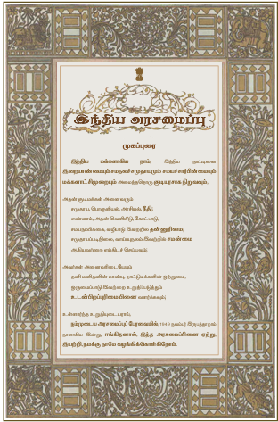
இந்திய மக்களாகிய நாம், இந்திய நாட்டினை இறையாண்மையும் சமநலச் சமுதாயமும் சமயச்சார்பின்மையும் மக்களாட்சி முறையும் அமைந்ததொரு குடியரசு நிறுவவும்,
அதன் குடிமக்கள் அனைவரும்
சமுதாய, பொருளியல், அரசியல் நீதி,
எண்ணம், அதன் வெளியீடு, கோட்பாடு,
சமுயநம்பிக்கை, வழிபாடு இவற்றில் தன்னுரிமை,
சமுதாயப்படிநிலை, வாய்ப்புநலம் இவற்றில் சமன்மை
ஆகியவற்றை எய்திடச் செய்யவும்,
அவர்கள் அனைவரிடையேயும்
தனிமனிதனின் மாண்பு, நாட்டு மக்களின் ஒற்றுமை,
ஒருமைப்பாடு இவற்றை உறுதிப்படுத்தும்
உடன்பிறப்புரிமையினை வளர்க்கவும்,
உள்ளார்ந்த உறுதியுடையராய்,
நம்முடைய அரசமைப்புப் பேரவையில், 1949 நவம்பர் 26 ஆம் நாளாகிய இன்று ஈங்கிதனால், இந்த அரசமைப்பினை ஏற்று, இயற்றி நமக்கு நாமே வழங்கிக்கொள்கிறோம், இந்திய அரசமைப்பு படத்திற்கான விளக்கம் முடிவு,
கல்வி, அறிவுத் தேடலுக்கான பயணம் மட்டுமல்ல, எதிர்கால வாழ்விற்கு
அடித்தளம் அமைத்திடும் கனவின் தொடக்கமும்கூட. அதே போன்று,
பாடநூல் என்பது மாணவர்களின் கைகளில் தவழும் ஒரு வழிகாட்டி
மட்டுமல்ல, அடுத்த தலைமுறை மாணவர்களின் சிந்தனைப் போக்கை
வடிவமைத்திடும் வல்லமை கொண்டது என்பதையும் உணர்ந்துள்ளோம்.
பெற்றோர், ஆசிரியர் மற்றும் மாணவரின் வண்ணக் கனவுகளைக்
குழைத்து ஓர் ஓவியம் தீட்டியிருக்கிறோம். அதனூடே கீழ்க்கண்ட
நோக்கங்களையும் அடைந்திடப் பெருமுயற்சி செய்துள்ளோம்.
புதுமையான வடிவமைப்பு, ஆழமான பொருள் மற்றும் குழந்தைகளின்
உளவியல் சார்ந்த அணுகுமுறை எனப் புதுமைகள் பல தாங்கி
உங்களுடைய கரங்களில் இப்புதிய பாடநூல் தவழும்பொழுது,
பெருமிதம் ததும்ப ஒரு புதிய உலகத்துக்குள் நீங்கள் நுழைவீர்கள்
என்று உறுதியாக நம்புகிறோம்.
ஜன கண மன அதிநாயக ஜய ஹே
பாரத பாக்ய விதாதா
பஞ்சாப ஸிந்து குஜராத மராட்டா
திராவிட உத்கல பங்கா
விந்திய ஹிமாசல யமுனா கங்கா
உச்சல ஜலதி தரங்கா
தவ சுப நாமே ஜாகே
தவ சுப ஆசிஸ மாகே
காஹே தவ ஜய காதா
ஜன கண மங்கள தாயக ஜய ஹே
பாரத பாக்ய விதாதா
ஜய ஹே ஜய ஹே ஜய ஹே
ஜய ஜய ஜய ஜய ஹே
மகாகவி இரவீந்திரநாத தாகூர்.
இந்தியத் தாயே மக்களின் இன்ப துன்பங்களைக் கணிக்கின்ற நீயே
எல்லாருடைய மனத்திலும் ஆட்சி செய்கிறாய். நின் திருப்பெயர் பஞ்சாபையும், சிந்துவையும், குஜராத்தையும், கூர்ச்சரத்தையும், மராட்டியத்தையும், திராவிடத்தையும், உத்கலத்தையும், வங்காளத்தையும் உள்ளக் கிளர்ச்சி அடையச் செய்கிறது.
நின் திருப்பெயர் விந்திய இமயமலைத் தொடர்களில் எதிரொலிக்கிறது யமுனை,
கங்கை ஆறுகளின் இன்னொலியில் ஒன்றுகிறது, இந்தியக் கடலலைகளால்
வணங்கப்படுகிறது. அவை நின்னருளை வேண்டுகின்றன, நின் புகழைப் பரவுகின்றன. இந்தியாவின் இன்ப துன்பங்களைக் கணிக்கின்ற தாயே
உனக்கு வெற்றி! வெற்றி! வெற்றி
நீராருங் கடலுடுத்த நிலமடந்தைக் கெழிலொழுகும்
சீராரும் வதனமெனத் திகழ்பரதக் கண்டமிதில்
தெக்கணமும் அதிற்சிறந்த திராவிடநல் திருநாடும்
தக்கசிறு பிறைநுதலும் தரித்தநறுந் திலகமுமே
அத்திலக வாசனைபோல் அனைத்துலகும் இன்பமுற
எத்திசையும் புகழ்மணக்க இருந்தபெருந் தமிழணங்கே
தமிழணங்கே
உன் சீரிளமைத் திறம்வியந்து செயல்மறந்து வாழ்த்துதுமே
வாழ்த்துதுமே
வாழ்த்துதுமே
மனோன்மணீயம் பெ சுந்தரனார்.
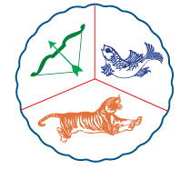
ஒலி எழுப்பும் நீர் நிறைந்த கடலெனும் ஆடையுடுத்திய நிலமெனும் பெண்ணுக்கு,
அழகு மிளிரும் சிறப்பு நிறைந்த முகமாகத் திகழ்கிறது பரதக்கண்டம்.
அக்கண்டத்தில், தென்னாடும் அதில் சிறந்த திராவிடர்களின் நல்ல திருநாடும், பொருத்தமான பிறை போன்ற நெற்றியாகவும், அதிலிட்ட மணம் வீசும் திலகமாகவும் இருக்கின்றன.
அந்தத் திலகத்தில் இருந்து வரும் வாசனைபோல, அனைத்துலகமும் இன்பம்
பெறும் வகையில் எல்லாத் திசையிலும் புகழ் மணக்கும்படி புகழ் பெற்று இருக்கின்ற
பெருமைமிக்க தமிழ்ப் பெண்ணே தமிழ்ப் பெண்னே என்றும் இளமையாக
இருக்கின்ற உன் சிறப்பான திறமையை வியந்து உன் வயப்பட்டு எங்கள் செயல்களை மறந்து உன்னை வாழ்த்துவோமே வாழ்த்துவோமே வாழ்த்துவோமே
நாட்டின் உரிமை வாழ்வையும் ஒருமைப்பாட்டையும்
பேணிக்காத்து வலுப்படுத்தச் செயற்படுவேன் என்று உளமார
நான் உறுதி கூறுகிறேன்.
ஒருபோதும் வன்முறையை நாடேன் என்றும், சமயம்,
மொழி, வட்டாரம் முதலியவை காரணமாக எழும்
வேறுபாடுகளுக்கும் பூசல்களுக்கும் ஏனைய அரசியல்
பொருளாதாரக் குறைபாடுகளுக்கும் அமைதி நெறியிலும்
அரசியல் அமைப்பின் வழியிலும் நின்று தீர்வு காண்பேன்
என்றும் நான் மேலும் உறுதியளிக்கிறேன்.
இந்தியா எனது நாடு. இந்தியர் அனைவரும் என் உடன்
பிறந்தவர்கள். என் நாட்டை நான் பெரிதும் நேசிக்கிறேன்.
இந்நாட்டின் பழம்பெருமைக்காகவும் பன்முக மரபுச்
சிறப்புக்காகவும் நான் பெருமிதம் அடைகிறேன். இந்நாட்டின்
பெருமைக்குத் தகுந்து விளங்கிட என்றும் பாடுபடுவேன்.
என்னுடைய பெற்றோர், ஆசிரியர்கள், எனக்கு வயதில்
மூத்தோர் அனைவரையும் மதிப்பேன் எல்லாரிடமும் அன்பும்
மரியாதையும் காட்டுவேன்.
என் நாட்டிற்கும் என் மக்களுக்கும் உழைத்திட முனைந்து
நிற்பேன். அவர்கள் நலமும் வளமும் பெறுவதிலேதான் என்றும்
மகிழ்ச்சி காண்பேன்.
உலகின் மூத்த மொழியாம் தமிழின்
பல்வேறு பரிமாணங்களை
இன்றைய இளம்தலைமுறைக்கு
அறிமுகப்படுத்தும் ஒரு துணைக்கருவியாக இப்பாடநூல்.
ஆளுமை மிக்க ஆசிரியர்களுக்கும்
ஆற்றல் நிறை மாணவர்களுக்கும்
ஒவ்வோர் இயலையும் ஆர்வத்துடன் அணுக உரைநடை உலகம், கவிதைப்பேழை, விரிவானம், கற்கண்டு ஆகிய தலைப்புகளாக
பொருண்மைக்கு ஏற்ப இயலின் தொடக்கத்தில் கற்றல் நோக்கங்கள்
பாடப்பகுதிகளின் கருத்தை விளக்குவதற்கு அரிய, புதிய செய்திகளை
அறிந்துகொள்ளத் தெரிந்து தெளிவோம்.
பயின்ற பாடங்கள் குறித்துச் சிந்திக்க கற்றல் செயல்பாடுகளைக் கற்பவை கற்ற பின்
இயலின் இறுதியில் விழுமியப் பக்கமாக நிற்க அதற்குத் தக
உயர்சிந்தனைத் திறன்பெற, படைப்பாக்கத்தின்வழி வாழ்வைத்
தன்னம்பிக்கையுடன் எதிர்கொள்ள, படித்துச்சுவைக்க, மொழியோடு விளையாடு
இலக்கியச்சுவை உணர்ந்து நுட்பங்களை உள்வாங்கி மொழியை ஆற்றலுடன்
பயன்படுத்த மொழியை ஆள்வோம்
மாணவர்தம் அடைவை அளவிட மதிப்பீடு
பயின்ற பாடங்கள் குறித்துச் சிந்திக்க, கற்றல் செயல்பாடுகளாகக் கற்பவை
கற்றபின்
மொழிப்பாடத்தை மட்டுமல்லாமல் பிறபாடங்களைப் பயில, கருத்துகளைப் புரிந்து எதிர்வினையாற்ற உதவும் ஏணியாய் புதிய வடிவம், பொலிவான
உள்ளடக்கத்துடன் இப்பாடநூல் உங்கள் கைகளில்
வரிசை எண் |
பொருண்மை, இயல் |
பாடத்தலைப்புகள் |
மாதம் |
1 |
பொருண்மை, நாகரிகம் பண்பாடு, இயல், பாடறிந்து ஒழுகுதல் |
பாடத்தலைப்பு, கண்மணியே கண்ணுறங்கு, பாடத்தலைப்பு, மொழி இறுதி எழுத்துகள், (நட்சத்திரக் குறியீடு) |
அக்டோபர் |
2 |
பொருண்மை, தொழில், வணிகம் இயல், கூடித் தொழில் செய் |
பாடத்தலைப்பு, நானிலம் படைத்தவன்,
|
நவம்பர், டிசம்பர் |
நட்சத்திர குறியீடு குறியிட்ட பாடல்கள் மனப்பாடப்பகுதி ஆகும்
ஆறாம் வகுப்பு
இரண்டாம் பருவம்
தொகுதி 1
தமிழ்
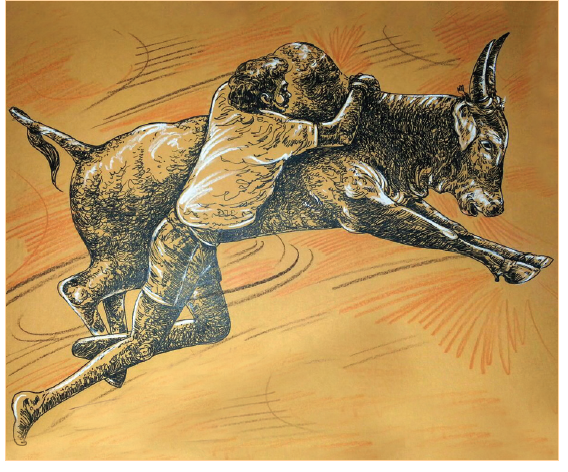
நல்லொழுக்கமே நல்ல மனிதர்களை உருவாக்கும் நாம் ஒழுக்க நெறிகளை அறிந்தால் தான் அவற்றை பின்பற்றி நல்வாழ்வு வாழ முடியும், இந்த நோக்கத்திற்காகவே நம் முன்னோர் அற நூல்களை படைத்தனர் நாம் பின்பற்ற வேண்டிய நற்பண்புகளை அறநூல்கள் விளக்குகின்றன அவற்றை அறிவோம் வாருங்கள்.
நன்றயறிதல் பொறையுடைமை இன்சொல்லோடு
இன்னாத எவ்வுயிர்க்கும் செய்யாமை கல்வியோடு
ஒப்புரவு ஆற்ற அறிதல் அறிவுடைமை
நல்லினத் தாரோடு நட்டல் இவையெட்டும்
சொல்லிய ஆசார வித்து
பெருவாயின் முள்ளியார்
நன்றி அறிதல், பிறர் செய்த உதவியை மறவாமை
ஒப்புரவு, எல்லோரையும் சமமாகப் பேணுதல்
நட்டல், நட்புக் கொள்ளுதல்
நன்றியறிதல், இன்னாத
நல்லினத், சொல்லிய
பிறர் செய்த உதவியை மறவாதிருத்தல், பிறர் செய்யும் தீமைகளைப் பொறுத்துக் கொள்ளுதல், இனிய சொற்களைப் பேசுதல், எவ்வுயிர்க்கும் துன்பம் செய்யாதிருத்தல், கல்வி அறிவு பெறுதல், எல்லோரையும் சமமாகப் பேணுதல், அறிவுடையவராய் இருத்தல், நற்பண்புகள் உடையவரோடு நட்புக் கொள்ளுதல் ஆகிய எட்டும் நல்லொழுக்கத்தின் விதைகள் ஆகும்.
ஆசாரக்கோவையின் ஆசிரியர் பெருவாயின் முள்ளியார்,
இவர் பிறந்த ஊர் வண்கயத்தூர். ஆசாரக்கோவை என்பதற்கு நல்ல ஒழுக்கங்களின் தொகுப்பு என்பது பொருள். இந்நூல் பதினெண் கீழ்க்கணக்கு நூல்களுள் ஒன்று. இந்நூல் நூறு வெண்பாக்களைக் கொண்டது.
1. நாம் எந்தெந்த வகையில் பிறருக்கு உதவலாம் என்பது குறித்து நண்பர்களுடன் கலந்துரையாடுக.
2. இந்தப் பாடலில் கூறப்படும் கருத்துகளுக்கு பொருத்தமான திருக்குறள் அதிகாரங்களின் தலைப்புகளைப் பட்டியலிடுக.
3. கூடா நட்பு கேடாய் முடியும் என்னும் கருத்து அமைந்த கதை ஒன்று கூறுக.
சரியான விடையை தேர்ந்தெடுத்து எழுதுக.
1, பிறரிடம் நான் டேஷ் பேசுவேன்
அ, கடுஞ்சொல்
ஆ, இன்சொல்
இ, வன்சொல்
ஈ, கொடுஞ்சொல்
2, பிறர் நமக்கு செய்யும் தீங்கை பொறுத்துக் கொள்வது டேஷ் ஆகும்
அ, வம்பு
ஆ, அமைதி
இ, அடக்கம்
ஈ, பொறை
3, அறிவு கூட்டல் உடைமை என்பதனைச் சேர்த்தெழுதக் கிடைக்கும் சொல் டேஷ்
அ, அறிவுடைமை
ஆ, அறிவுஉடமை
இ, அறியுடைமை
ஈ, அறிஉடமை
4, இவை கூட்டல் எட்டும் என்பதனைச் சேர்த்தெழுதக் கிடைக்கும் சொல் டேஷ்
அ, இவை எட்டும்
ஆ, இவையெட்டும்
அ, இவ்வெட்டும்
ஈ, இவ்எட்டும்
5, நன்றியறிதல் என்னும் சொல்லைப் பிரித்து எழுதக் கிடைப்பது டேஷ்
அ, நன்றி கூட்டல் யறிதல்
ஆ, நன்றி கூட்டல் அறிதல்
இ, நன்று கூட்டல் அறிதல்
ஈ, நன்று கூட்டல் யறிதல்
6, பொறையுடைமை என்னும் சொல்லை பிரித்து எழுதக் கிடைப்பது டேஷ் அ, பொறுமை கூட்டல் உடமை
ஆ, பொறை கூட்டல் யுடமை
இ, பொறு கூட்டல் யுடமை
ஈ, பொறை கூட்டல் உடைமை
1, எந்த உயிருக்கும் செய்யக்கூடாதது எது
2, நாம் யாருடன் நட்புக் கொள்ள வேண்டும்
ஆசாரக்கோவை கூறும் எட்டு வித்துகள் யாவை
1, உங்கள் நண்பரிடம் உங்களுக்கு பிடித்த பண்புகளைப் பட்டியலிடுக.
2, நல்ல ஒழுக்கங்களை வித்து எனக் கூறுவதின் காரணத்தைச் சிந்தித்து எழுதுக.
பாடல்கள் மனதிற்கு அமைதியையும் மகிழ்ச்சியையும் தருபவை. பாடலைப் பாடினாலும் மகிழ்ச்சி, கேட்டாலும் மகிழ்ச்சி, ஏட்டில் எழுதப்படாத இசைப்பாடல்கள் தமிழில் ஏராளமாக உள்ளன. தமிழரின் பிறப்பு முதல் இறப்பு வரை ஒவ்வொரு நிகழ்விலும் பாடல்கள் முதன்மையான இடத்தை பெறுகின்றன. இந்நாட்டுப்புறப் பாடல்களே தமிழர்களின் வாழ்க்கை முறைகளைப் படம் பிடித்து காட்டுகின்றன.
ஆராரோ ஆரிராரோ
ஆராரோ ஆரிராரோ
நந்தவனம் கண் திறந்து
நற்றமிழ் பூ எடுத்து
பண்ணோடு பாட்டைசைத்துப்
பார்போற்ற வந்தாயோ
தந்தத்திலே தொட்டில் கட்டித்
தங்கத்திலே பூ இழைத்துச்
செல்லமாய் வந்து உதித்த
சேரநாட்டு முத்தேனோ
வாழை இலை பரப்பி
வந்தாரைக் கை அமர்த்திச்
சுவையான விருந்து வைக்கும்
சோழநாட்டு முக்கனியோ
குளிக்க குளம் வெட்டிக்
குலம் வாழ அணைக்கட்டிப்
பசியைப் போக்க வந்த
பாண்டி நாட்டு முத்தமிழோ
கண்ணே கண்மணியே
கண்ணுறங்கு கண்ணுறங்கு
நந்தவனம், பூஞ்சோலை
பார், உலகம்
பண், இசை
இழைத்து, பதித்து
முத்தேன், கொம்புத்தேன், மலைத்தேன், கொசுத்தேன்
முக்கனி, மா, பலா, வாழை
முத்தமிழ், இயல், இசை, நாடகம்
நந்தவனம், நற்றமிழ்
பண்ணோடு, பார் போற்ற
தமிழ் சோலையில் பூ எடுத்து, இசையுடன் பாடி உலகம் புகழ வந்தாயோ, தங்கப் பூ பதித்த தந்தத்தால் ஆணை தொட்டிலில் செல்லமாய் உறங்க வந்த சேரநாட்டின் முத்தேனோ, இல்லம் வந்தவரை இன்முகத்தோடு வரவேற்று அறுசுவை உணவளிக்கும் சோழ நாட்டின் முக்கனியோ, குளம் வெட்டி, அணை கட்டிக் குடிமக்களின் பசியைப் போக்கும் பாண்டி நாட்டின் முத்தமிழோ, கண்ணே கண்மணியே கண்மூடி உறங்குவாயாக
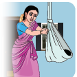
தாலாட்டு வாய்மொழி இலக்கியங்களில் ஒன்று. தால் என்பதற்கு நாக்கு என்று பொருள். நாக்கை அசைத்து பாடுவதால் தாலாட்டு தாள் கூட்டல் ஆட்டு என்று பெயர் பெற்றது. குழந்தையின் அழுகையை நிறுத்தவும் தூங்க வைக்கவும் இனிய ஓசையுடன் பாடும் பாடல் தாலாட்டு.
உங்கள் பகுதியில் பாடப்படும் தாலாட்டுப்பாடல் ஒன்றை அறிந்து வந்து பாடுக
சரியான விடையைத் தேர்ந்தெடுத்து எழுதுக
1, கண்ணுறங்கு என்னும் சொல்லைப் பிரித்து எழுதக் கிடைப்பது டேஷ்
அ, கண் கூட்டல் உறங்கு
ஆ, கண்ணு கூட்டல் உறங்கு
இ, கண் கூட்டல் இறங்கு
ஈ, கண்ணு கூட்டல் இறங்கு
2, வாழை கூட்டல் இழை என்பதனைச் சேர்த்தெழுத கிடைக்கும் சொல் டேஷ்
அ, வாழையிலை
ஆ, வாழைஇலை
இ, வாழைலை
ஈ, வாழிலை
3, உதித்த என்ற சொல்லிற்குரிய எதிர்ச்சொல்
அ, மறைந்த
ஆ, நிறைந்த
இ, குறைந்த
ஈ, தோன்றிய
1, இப்பாடலில் குறிப்பிடப்படும் மூன்று நாடுகள் யாவை
2, நமது வீட்டிற்கு வந்தவரை உபசரிக்கும் முறையாக நாட்டுப்புறப்பாடல் கூறுவது யாது
தாய் தன் குழந்தையை எவ்வாறெல்லாம் பாராட்டுகிறாள்
உங்கள் வீட்டில் சிறு குழந்தை இருந்தால், அதன் பராமரிப்பில் உங்களின் பங்கு என்னவாக இருக்கும்.
விரும்பிக் கொண்டாடுவது விழா எனப்படும். உறவுகள் ஒன்று கூடி கொண்டாடும் விழாக்கள் மனதிற்கு மகிழ்வைத்தரும். மனிதரிடையே ஒற்றுமையை வளர்க்கும். தமிழரின் நாகரிகம், வீரம் ஆகியவற்றை எடுத்துக்காட்டும் வகையில் பல விழாக்கள் கொண்டாடப்படுகின்றன. விழாக்கள் நமது பண்பாட்டை அடுத்து தலைமுறையினருக்கு கொண்டு சேர்க்கின்றன. தமிழருக்கே உரிய சிறப்பான விழாவைப் பற்றி அறிவோம் வாருங்கள்.
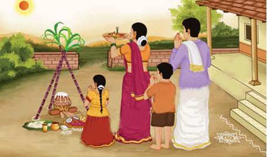
இயற்கையோடு இணைந்து வாழ்வதே தமிழரின் வாழ்க்கை முறை ஆகும். இயற்கையை வணங்குதல் தமிழர் மரபு, தமிழர் கொண்டாடும் பல விழாக்கள் இயற்கையைப் போற்றும் வகையிலேயே அமைந்து இருக்கின்றன. அவற்றுள் சிறப்பானது பொங்கல் விழா ஆகும். இது தமிழர் திருநாள் என்றும் போற்றப்படுகிறது.
கதிரவனுக்கு நன்றி கூறி சிறப்புச் செய்யும் வண்ணம் நாம் பொங்கல் விழா கொண்டாடுகிறோம். உழவர்கள் ஆடிதிங்களில் விதைப்பர். தைத்திங்களில் அறுவடை செய்து பயன் அடைவர். தைத்திங்களின் முதல் நாளில் பொங்கலிட்டு வழிபடுவர். எனவே இத்திருவிழாவை அறுவடைத் திருவிழா என்றும் அழைப்பர். அந்தச் சமயத்தில் இயற்கை அன்னை பசுமையான ஆடை உடுத்தி, பல நிறப் பூக்களைச் சூடி இருப்பாள். காய் கனியும் கரும்பும் எங்குப் பார்த்தாலும் விளைந்து காட்சி தரும்.
உழவர்கள் இயற்கைக்கும் தம்முடன் உழைத்த கால்நடைகளுக்கும் இந்நாளில் நன்றி தெரிவித்து மகிழ்கின்றனர். எனவே இவ்விழாவை உழவர் திருநாள் என்றும் கூறுவர். பொங்கல் திருநாள் இரண்டு நாள்கள் முதல் நான்கு நாள்கள் வரை கொண்டாடப்படுகிறது. இது வட்டாரத்திற்கு வட்டாரம் மாறுபடுகிறது.
பழையன கழிதலும் புதியன புகுதலும் நன்னூல் நூற்பா 462 என்பது ஆன்றோர் மொழி. வீட்டில் உள்ள பயனற்ற பொருள்களை நீக்கி வீட்டைத் தூய்மை செய்யும் நாள் போக்கி போகித்திருநாள். இது மார்கழி மாதத்தின் இறுதி நாளாகும்.
வாழ்க்கைக்கு வளம் தரும் மலைக்கடவுள் இந்திரனை வழிபடும் நோக்கில் அக்காலத்தில் போகிப்பண்டிகை இந்திரவிழாவாகக் கொண்டாடப்பட்டது.
தை மாதத்தின் முதல் நாள் பொங்கல் திருநாள் ஆகும். இத்திருநாளன்று வாசலில் வண்ணக்கோலமிடுவர், மாவிலைத் தோரணம் கட்டுவர், புதுப் பானையில் புத்தரிசியோடு வெல்லம், முந்திரி, நெய், சேர்த்துப் பொங்கலிடுவர், பொங்கல் என்பதற்குப் பொங்கிப்பெருகி வருவது என்று பொருள், பொங்கல் பொங்கி வரும் வேளையில் பொங்கலோ பொங்கல் என்று மங்கல ஒலி எழுப்பிப் போற்றுவர், பொங்கல் பொங்கி வருவது போல் வாழ்வில் மகிழ்ச்சி பொங்கிப் பெருகும் என்பது மக்களின் நம்பிக்கை ஆகும், பின்னர் தலைவாழை இலையிட்டுப் பொங்கலைப் படைப்பர், கரும்பு, மஞ்சள் கொத்து, தேங்காய், பழங்கள், வெற்றிலை பாக்கு ஆகியவற்றை வைத்து வழிபடுவர், விளைச்சலுக்குக் காரணமான கதிரவனை நன்றியோடு வணங்கி மகிழ்வர், சர்க்கரைப் பொங்கலை அனைவருக்கும் அளித்து தாமும் உண்டு மகிழ்வர்.
தை முதல் நாளில் திருவள்ளுவராண்டு தொடங்குகிறது, தை இரண்டாம் நாள் திருவள்ளுவர் நாள் கொண்டாடப்படுகிறது
பொங்கலுக்கு அடுத்த நாள் மாட்டுப்பொங்கல், மாடுகள் உழவர்களின் செல்வமாக மதிக்கப்படுகின்றன. மாடு என்ற சொல்லுக்குச் செல்வம் என்னும் பொருளும் உண்டு, உலவுக்கும் உழவருக்கும் உற்ற துணையாக மாடுகள் விளங்குகின்றன, அவற்றிற்கு நன்றி செலுத்தும் வகையில் மாட்டுப்பொங்கல் கொண்டாடப்படுகிறது.
மாட்டு பொங்கலன்று மாடுகளை நீராட்டுவர், கொம்புகளைச் சீவி வண்ணங்கள் தீட்டுவர், மாடுகளின் கழுத்திலே மணிகளைக் கட்டுவர், பூவும் தழையும் சூட்டுவர், மாட்டுக்கு மஞ்சள், குங்குமம் இடுவர், பொங்கல், தேங்காய், பழங்கள், வெற்றிலை பாக்கு, போன்றவற்றைப் படைத்து வழிபடுவர். மாட்டுப்பொங்கல் நாளிலோ அதற்கு அடுத்த நாளிலோ சில ஊர்களில் மஞ்சுவிரட்டு நடைபெறும், மஞ்சுவிரட்டு என்பது மாடுகளை அடக்கித் தழுவும் வீர விளையாட்டு ஆகும், இவ்விளையாட்டு மாடுபிடித்தல், ஜல்லிக்கட்டு, ஏறுதழுவுதல் என்றும் அழைக்கப்படுகிறது.
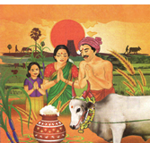
திருவள்ளுவர் கி மு பொது ஆண்டிற்கு முன் 31 இல் பிறந்தவர், எனவே, திருவள்ளுவராண்டைக் கணக்கிட நடைமுறை ஆண்டுடன் 31 கூட்டிக் கொள்ள வேண்டும். எடுத்துக்காட்டு 2025 கூட்டல் 31 சமம் 2056
மாட்டுப் பொங்கலுக்கு அடுத்த நாள் காணும் பொங்கல் ஆகும், இந்நாளில் உற்றார் உறவினர் மற்றும் நண்பர் வீடுகளுக்குச் சென்று அவர்களை கண்டு மகிழ்வர், குடும்பத்தினருடன் விரும்பிய இடங்களுக்குச் சென்று மகிழ்வுடன் பொழுதைக் கழிப்பர், மேலும் பட்டிமன்றங்கள், கலை நிகழ்ச்சிகள் முதலியவற்றை நடத்துவர், விளையாட்டுப் போட்டிகள் நடத்தி வெற்றி பெறுவோருக்குப் பரிசுகளை வழங்கிப் பாராட்டுவர்,
இயற்கை, உழைப்பு, நன்றியுணர்வு, பண்பாடு ஆகியவற்றைப் போற்றும் விழாவே பொங்கல் விழா ஆகும், உலகு எங்கும் உள்ள தமிழர்கள் பொங்கல் திருவிழாவை மகிழ்ச்சியுடன் கொண்டாடுகின்றனர்.
அறுவடை திருநாள் ஆந்திர பிரதேசம், தெலுங்கானா, கர்நாடகம், மராட்டியம், உத்திரப்பிரதேசம், ஆகிய மாநிலங்களில் மகர சங்கராந்தி என்னும் பெயரில் கொண்டாடப்படுகிறது. பஞ்சாப் மாநிலத்தில் லோரி என்ற பெயரில் கொண்டாடப்படுகிறது. குஜராத், ராஜஸ்தான் மாநிலங்களில் உத்தராயன் என்று கொண்டாடப்படுகிறது.
1, உங்கள் ஊரில் கொண்டாடப்படும் பிற விழாக்கள் பற்றி வகுப்பில் கலந்துரையாடுக
2, உங்கள் பள்ளியில் கொண்டாடப்படும் தேசிய விழாக்களின் பட்டியலை உருவாக்குக
3, தமிழ்நாட்டில் ஏறு தழுவுதல் நடக்கும் இடங்களின் பெயர்களை தொகுக்க
4, உங்களுக்கு பிடித்த விழா எது, ஏன்
1, கதிர் முற்றியதும் டேஷ் செய்வது
அ, அறுவடை
ஆ, உரமிடுதல்
இ, நடவு
ஈ, கலை எடுத்தல்
2, விழாக்காலங்களில் வீட்டின் வாயிலில் மாவிலையால் டேஷ் கட்டுவர்
அ, செடி
ஆ, கொடி
இ, தோரணம்
ஈ, அலங்கார வளைவு
3, பொங்கல் கூட்டல் அன்று என்பதனைச் சேர்த்தெழுதக் கிடைக்கும் சொல் டேஷ்
அ, பொங்கலன்று
ஆ, பொங்கல்அன்று
இ, பொங்கலென்று
ஈ, பொங்கஅன்று
4, போகிப்பண்டிகை என்னும் சொல்லைப் பிரித்து எழுதக் கிடைப்பது டேஷ்
அ, போகி கூட்டல் பண்டிகை
ஆ, போ கூட்டல் பண்டிகை
இ, போகு கூட்டல் பண்டிகை
ஈ, போகிப் கூட்டல் பண்டிகை
5, பழையன கழிதலும் டேஷ் புகுதலும்
அ, புதியன
ஆ, புதுமை
இ, புதிய
ஈ, புதுமையான
6, பச்சைப்பசேல் என்ற வயலைக் காண இன்பம் தரும், பட்டுப்போன மரத்தை மரத்தைக் காண டேஷ் தரும்
அ, அயர்வு
ஆ, கனவு
இ, துன்பம்
ஈ, சோர்வு
அ, பொங்கல் டேஷ்
ஆ, செல்வம் டேஷ்
இ, பண்பாடு டேஷ்
1, போகிப்பண்டிகை எதற்காக கொண்டாடப்படுகிறது
2, உழவர்கள் ஏன் மாடுகளுக்கு நன்றி செலுத்துகின்றனர்
காணும் பொங்கலை மக்கள் எவ்வாறு கொண்டாடுகின்றனர்
1, பொங்கல் விழாவின்போது உங்கள் ஊரில் என்னென்ன சிறப்பு நிகழ்ச்சிகளை ஏற்பாடு செய்வீர்கள்
2, காணும் பொங்கல் எவ்வாறு மக்களிடையே ஒற்றுமையை வளர்கிறது.
கல்வி அறிவில் சிறந்த அறவோரையும் நல்லொழுக்கம் மிக்க மக்களையும் கொண்டது நம் தமிழ்நாடு, இவர்களைப் போற்றி பாதுகாக்க வேண்டியது மன்னர்களின் கடமையாக கருதப்பட்டது, அறிவிற் சிறந்த புலவர்கள் மன்னர்களுக்குத் தேவையான அறிவுரைகளை வழங்கி நாட்டைப் பாதுகாக்க உதவினர், அவ்வாறு இரண்டு நாடுகளுக்கு இடையே நடைபெற இருந்த போரை அவ்வையார் தடுத்த நிகழ்வை நாடகமாகப் படித்துச் சுவைப்போம்.
இடம்,
அதியமான் அரண்மனை
நாடக மாந்தர்கள்
அதியமான், அவ்வையார், அமைச்சர்
அவ்வையார்,
நாட்டுமக்கள் நலனையே நினைத்து நல்லாட்சி செய்யும் அதியமான் நெடுமான் அஞ்சியே வணக்கம்
அதியமான்,
அவ்வையே வாருங்கள், வாருங்கள், வணக்கம்
அவ்வையார்,
ஊர் ஊராகச் சென்று வந்த என்னை, உன் அன்பினால் கட்டிப்போட்டுவிட்டாய், நானும் நீண்ட காலமாக உன் அரண்மனையிலேயே தங்கி விட்டேன், அதெல்லாம் இருக்கட்டும், காலையிலிருந்து உன்னை அரண்மனையில் காணவில்லையே, எங்கு சென்றிருந்தாய்
அதியமான்,
இன்று நம் அமைச்சரோடும், வீரர்கள் சிலரோடும் காட்டுக்குச் சென்றிருந்தேன், அங்கே இந்த கனியைப் பறித்தேன், இதைச் சாப்பிட்டுப் பார்த்துச் சுவை எப்படி இருக்கிறது என்று சொல்லுங்கள் தாயே, அதியமான் நெல்லிக்கனியை அவ்வையாரிடம் தருகிறார், அவ்வையார் அதனை வாயில் இட்டு சுவைக்கிறார்
அவ்வையார்,
அடடா, என்ன சுவை, என்ன சுவை, என்ன கனி இது
அமைச்சர்,
கிடைப்பதற்கு அரிதான நெல்லிக்கனி இது, எப்போதாவது ஒருமுறைதான் காய்த்துப் பழுக்கும், ஒரு மலையுச்சியில் இருந்த கருநெல்லி மரத்தில் இக்கனி பழுத்திருந்தது, அந்த மரத்தில் நமது வீரர்களால் ஏறமுடியவில்லை, பிறகு நமது அரசரே முயன்று மரத்தில் ஏறி இந்தக் கனியைப் பறித்தார். அது மட்டுமன்று இக்கனியை உண்டவர்கள் நோய்நொடியின்றி நீண்டகாலம் வாழ்வார்கள் என்று பெரியோர் கூறுவர்.
அவ்வையார்,
அதியமானே, என்ன செயல் செய்துவிட்டாய், நாட்டைக் காக்கும் பொறுப்பை உடைய நீ இதனை உண்ணாமல் எனக்கு கொடுத்து விட்டாயே முன்பே தெரிந்திருந்தால் இதனை நான் உண்ணாமல் உன்னையே உன்ன வைத்திருப்பேனே
அதியமான்,
என்னைப்போன்ற ஓர் அரசன் இறந்துபோனால் வேறு ஒருவர் அரசராகிவிடுவார், ஆனால் உங்களைப் போன்ற அறிவிற்சிறந்த புலவர் ஒருவர் மறைந்தால் அந்த இழப்பை யாராலும் ஈடுசெய்ய முடியாது, அதனால்தான் நான் எதுவும் கூறாமல் நெல்லிக்கனியை உங்களை உண்ணச் செய்தேன்.
அவ்வையார்,
அதியமானே தமிழின் மீது நீ கொண்டுள்ள பற்று என் உள்ளத்தை உருகச் செய்கிறது நீ பல்லாண்டு வாழ்க

பெட்டிச் செய்தி ஆரம்பம்
தெரிந்து தெளிவோம்
சிறியிலை நெல்லித் தீங்கனி குறியாது
ஆதல் நின்னகத்து அடக்கிச்
சாதல் நீங்க எமக்கீந்தனையே
ஔவையார்
காட்சி 2
இடம்,
அதியமான் அரண்மனை
நாடக மாந்தர்கள்,
அதியமான், ஔவையார்
அவ்வையார்,
அதியமானே, இன்று உன் முகத்தில் கவலையின் இருள் கவிழ்ந்திருப்பதன் காரணம் என்னவோ,
அதியமான்,
இன்று காலை நம் ஒற்றர்கள் கொண்டுவந்த ஒரு செய்தி என் உள்ளத்தில் சிறு கலக்கத்தை ஏற்படுத்தியிருக்கிறது, மன்னன் தொண்டைமான் நம்மோடு பகைமை கொண்டவன் என்பது தாங்கள் அறிந்ததுதானே, அவன் இப்போது நம்மீது படையெடுத்துவர ஏற்பாடு செய்துவிட்டானாம், நம் தலைக்குமேல் போர்மேகங்கள் சூழ்ந்து விட்டன
அவ்வையார்,
அதியமான் நெடுமான் அஞ்சியே, உன் பெயரில்தான் அஞ்சி என்னும் சொல் இருக்கிறதேயன்றி, நீ அஞ்சி நான் ஒரு நாளும் கண்டதில்லையே, போர் உனக்கு புதிதா என்ன
அதியமான்,
போர் எனக்குப் புதிதும் அன்று, நான் போரைக் கண்டு அஞ்சுபவனும் அல்லேன், ஆனாலும்
அவ்வையார்,
ஆனாலும் ஏன் இந்த கலக்கம், ஈரத்திலும் வீரத்திலும் உனக்கு இணைசொல்ல யாருண்டு, நீர்நிலையில் படுத்திருக்கும் யானையானது, தன் மீது ஏறிக்குதித்தும் தந்தங்களைக் கழுவியும் விளையாடும் சிறுவர்களிடம் பணிந்து அன்புகாட்டும், அதுபோல நீயும் எம்மை போன்ற புலவர்களிடம் அன்புகாட்டிக் காட்சிக்கு எளியவனாக விளங்குகிறாய், அதே யானை, போர்க்களத்தில் பகைவரின் படையை வெருண்டோடச் செய்வதுபோல நீயும் பகைவரை எதிர்த்து வெல்கிறாய், அத்தகைய வீரமுடைய நீ இன்று போரைக்கண்டு தயங்கலாமா
அதியமான்,
தமிழ் அறிந்த அன்னையே, நான் எத்தனையோ போர்க்களங்களைக் கண்டவன், பகைவர்களை வென்றவன் என்பது தங்களுக்குத் தெரியாததன்று, ஆனால் ஒவ்வொரு போரின்போதும் எத்தனை உயிரிழப்புகள், எவ்வளவு அழிவு, தந்தையை இழந்த பிள்ளைகள், கணவனை இழந்த பெண்கள், மகனை இழந்த தாய்மார்கள், அண்ணனை இழந்த தம்பி தங்கைகள், என எத்தனையோ பேரின் கண்ணீர் ஒவ்வொரு போர்வெற்றிக்கு பின்னாலும் மறைந்திருக்கிறது, எனவே இந்தப் போரை தவிர்த்தால் என்ன
அவ்வையார்,
அன்பிற்சிறந்த அதியமானே, இப்போதுதான் உன் உள்ளம் எனக்குப் புரிந்தது, உன் கவலையை நான் தீர்க்கிறேன், நான் இப்போதே தொண்டைமானிடம் செல்கிறேன், அவனிடம் பேசி போர் ஏற்படாதவாறு தடுக்கிறேன்
அதியமான்,
ஆனால்
அவ்வையார்,
நீ என்ன நினைக்கிறாய் என எனக்குப் புரிகிறது, உன் தன்மானத்துக்கும் வீரவுணர்வுக்கும் சிறிதுகூட இழுக்கு ஏற்படாமல் நான் நடந்து கொள்வேன், நான் சென்று வருகிறேன், அவ்வையார் செல்கிறார் அதியமான் திகைத்து நிற்கிறார்
இடம்,
தொண்டைமான் அரண்மனை
நாடக மாந்தர்கள்,
தொண்டைமான், அவ்வையார், படைத்தலைவர்
படைத்தலைவர்,
அரசே வாழ்க, சற்றுமுன்தான் நமது ஒற்றரிடமிருந்து செய்தி வந்துள்ளது, அதியமான் சமாதானம் வேண்டி புலவர் ஒருவரைத் தூது அனுப்பியுள்ளாராம்.
தொண்டைமான்,
என்ன, அதியமான் தூது அனுப்பியுள்ளானா
படைத்தலைவர்,
ஆம் அரசே, அதியமானின் தூதுவராக அவ்வையார் நமது அரண்மனைக்கு வந்து கொண்டிருக்கிறாராம்
தொண்டைமான்,
வரட்டும் வரட்டும், அஞ்சியிடமிருந்து தூதுவரும் அவ்வை நம் போர்க்கருவிகளின் பெருக்கினை கண்டு அஞ்சி ஓட போகிறார் பாருங்கள்
படைத்தலைவர்,
அதோ அவ்வையாரே வந்து விட்டார், அவ்வையார் வருகிறார்.
தொண்டைமான்,
அருந்தமிழ்ப் புலவரான அவையே, வருக, வருக, என் பகைவரின் நாட்டில் இருந்து வந்தாலும் தாங்கள் தமிழ் புலவர் அல்லவா, தங்கள் வருகை எனக்கு மகிழ்ச்சியளிக்கிறது.
அவ்வையார்,
நீயும் தமிழின்மீது அன்புடையவன் என்பதை அறியும்போது நானும் மகிழ்ச்சியடைகிறேன்
தொண்டைமான்,
அந்த மகிழ்ச்சியோடு எனது படைக்கலக் கொட்டிலைப் பார்த்து வரலாம் வாருங்களேன்.
அவ்வையார்,
போர்க்கருவிகளைப் பார்த்து நான் என்ன செய்யப் போகிறேன்.
தொண்டைமான்,
எத்துணைப் பெரிய படைவலிமை உடைய அரசரோடு உங்கள் அதியமான் மோதப்போகிறான் என்பதை நீங்கள் அறிய வேண்டாமா.
ஔவையார்,
அதையும்தான் பார்ப்போம் வா.
இடம்,
படைக்கலக் கொட்டில்
நாடக மாந்தர்கள்,
தொண்டைமான், அவ்வையார்
தொண்டைமான்,
என் படைக்கருவிகளைப் பாருங்கள் அவ்வையாரே, இவ்வளவு பெரிய படைக்கலக் கொட்டிலை இதற்கு முன் நீங்கள் பார்த்திருக்கமாட்டீர்கள்.

அவ்வையார்,
ஆமாம், வில், அம்பு, வேல் ஈட்டி, வாள், கேடயம், மழு என எத்தனை கருவிகள், ஒவ்வொன்றிலும் எத்தனை வகைகள், ஒவ்வொரு வகையிலும் எத்தனை எண்ணிக்கை
தொண்டைமான்,
பார்க்கும்போதே வியப்பாக இருக்கிறது அல்லவா
அவ்வையார்,
ஆமாம், கருவிகளின் அளவு மட்டுமன்றி அவற்றை அழகாக அடுக்கி வைத்திருக்கும் முறையும் கண்களைக் கவர்கிறது, எல்லாக் கருவிகளும் புத்தம் புதியவனாக நெய் பூசப்பெற்று மாலையும் மயில் தோகைகளும் அணிவிக்கப்பட்டு எழிலாக காட்சியளிக்கின்றன.
தொண்டைமான்,
உங்கள் அதியமானின் படைக்கருவிகளை பற்றி சொல்லுங்களேன்.
அவ்வையார்,
அதை ஏன் கேட்கிறாய், அவை இவ்வளவு அழகாக இல்லை, அதியமான் அடிக்கடி போர் புரிந்து கொண்டே இருப்பதால், அவனது படைக் கருவிகள் எல்லாம் பகைவர் உடலைத் துளைத்த குருதிக்கறைகளுடன் நுனி ஒடிந்தும், கூர் மழுங்கியும் கொல்லனின் உலைக்களத்தில் கிடக்கின்றன. தொண்டைமானின் முகம் சுருங்குகிறது.
அவ்வையார்,
தொண்டைமானே ஏன் உன் முகம் மாறிவிட்டது
தொண்டைமான்,
உங்கள் சொற்கள் என்னைக் குழப்பி விட்டன
அவ்வையார்,
என்ன குழப்பம்
தொண்டைமான்,
என் படைக்கருவிகளின் அளவையும் அழகையும் பாராட்டிக் கூறினீர்கள் அதைக்கேட்ட என் உள்ளம் மகிழ்ச்சியடைந்தது, ஆனால், அடுத்ததாக நீங்கள் கூறிய செய்திதான் என்னைச் சிந்திக்க வைத்து விட்டது, அதியமானின் படைக்கருவிகள் போரில் பயன்படுத்தப்பட்டு வளைந்தும் நெளிந்தும் கிடக்கின்றன என்று கூறினீர்களே, அதுதான் எனக்கு உண்மையை புரிய வைத்தது, என்னிடம் கருவிகள் தாம் மிகுதியாக உள்ளன, நான் இதுவரை போர்க்களத்தை கண்டதில்லை, ஆனால் அதியமான் பல போர்களை நடத்தி வெற்றி கண்டவன், அவனோடு போரிடுவது எத்தகைய அழிவை தரும் என்பதை புரிந்து கொண்டேன்.
அவ்வையார்,
அருமை, அருமை, நான் கூறியதன் உட்பொருளைத் தெளிவாகப் புரிந்து கொண்டாய்
தொண்டைமான்,
ஆம், என் கண்களைத் திறந்த தாயே போரைக் கைவிட்டுவிடலாம் என்று அதியமானிடம் கூறிவிடுங்கள்
அவ்வையார்,
மிகவும் மகிழ்ச்சி தொண்டைமானே அவ்வாறே கூறி விடுகிறேன், போரில்லா மகிழ்ச்சியில் இந்த உலகம் திளைக்கட்டும், நான் சென்று வருகிறேன். அவ்வையார் விடைபெற்றுச் செல்கிறார் திரை
1, அறிவுசால் அவ்வையார் என்னும் நாடகத்தை வகுப்பில் நடித்துக் காட்டுக
2, சங்ககாலப் பெண் புலவர்களின் பெயர்களைத் தொகுத்து எழுதுக
அறிவுசால் அவ்வையார் என்னும் நாடகத்தைச் சிறுகதை வடிவில் சுருக்கமாக எழுதுக.
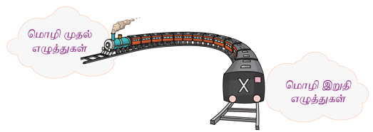
கார்த்திக், ஆங்காங், சுஜித், மார்க்கெட், திலீப், மார்ச் போன்ற பிறமொழிப் பெயர்ச்சொற்களில் இவ்வெழுத்துகள் இறுதி எழுத்துகளாக இடம்பெறுவதுண்டு.
1. மொழிக்கு இறுதியில் வாரா மெய் எழுத்துகள் யாவை
2. சொல்லின் இடையில் மட்டுமே வரும் எழுத்துகள் யாவை
தொலைக்காட்சி மற்றும் வானொலியில் வேளாண்மை தொடர்பான நிகழ்ச்சிகளைக் கேட்டு வந்து வகுப்பில் கூறுக.
1, மாட்டுப்பொங்கலன்று மாடுகள் பேசிக் கொள்வதாகக் கற்பனை செய்து உரையாடுக
2, உங்கள் பகுதியில் கொண்டாடப்படும் திருவிழாக்கள் குறித்துப் பேசுக.
பொறையுடமை, ஆசாரக்கோவை, நந்தவனம், முத்தேன், தைத்திங்கள், தலைவாழை, மஞ்சுவிரட்டு, போர்கருவிகள், கருநெல்லி, பன்னிரண்டு
மனிதர்களுக்குத் தேவையான பொருட்களைக் கிடைக்கச் செய்வதே வணிகத்தின் நோக்கங்களுள் ஒன்று, ஓர் இடத்தில் உற்பத்தியாகும் பொருள்களைப் பல இடங்களுக்கு அனுப்புவதும் பல இடங்களில் கிடைக்கும் பொருள்களை ஓர் இடத்தில் கிடைக்கச் செய்வதும் வணிகம் ஆகும்.
கிடைக்கும் பொருள்களின் மதிப்பைக் கூட்டி புதிய பொருளாக மாற்றுவது சிறந்த வணிகமாகும், சான்றாகக் கல் என்பது விற்பனை பொருளன்று, ஆனால் அதனை செதுக்கி சிலையாக மாற்றலாம், உதிரும் கல்தூளைக் கோலமாவாக மாற்றலாம், இதனை மதிப்புக்கூட்டுதல் என்பர்.
1, கிடைக்கும் பொருள்களின் டேஷ் யைக்கூட்டி புதிய பொருளாக மாற்றுவது சிறந்த வணிகம்
அ, அளவை
ஆ, மதிப்பை
இ, எண்ணிக்கையை
ஈ, எடையை
2, சிலை செதுக்கப்படும்போது உதிரும் கல்தூளைக் டேஷ் ஆக மாற்றலாம்
3, வணிகத்தின் நோக்கம் என்ன
4, மதிப்புக் கூட்டுதல் என்றால் என்ன
5, இப்பத்திக்கு ஏற்ற தலைப்பை எழுதுக.
முதல் கட்டத்தில் நீ நான் அவன் அவள் அவர் என்ற சொற்களும் |
இரண்டாம் கட்டத்தில் ஊருக்குச் என்ற சொல்லும் |
மூன்றாம் கட்டத்தில் சென்றாய் சென்றார் சென்றேன் சென்றான் சென்றாள் என்ற சொற்களும் உள்ளன |
எடுத்துக்காட்டு நீ ஊருக்குச் சென்றாய்
டேஷ்
டேஷ்
டேஷ்
டேஷ்
செல்வன்,
வாங்க மாமா நலமாக இருக்கின்றீர்களா
மாமா,
டேஷ் நீ எப்படி இருக்கிறாய்
செல்வன்,
நன்றாக இருக்கிறேன் உட்காருங்கள் மாமா
மாமா ,
அப்பா அம்மா எங்கே சென்றுள்ளார்கள்
செல்வன்,
இருவரும் கடைவீதிக்குச் டேஷ்
மாமா ,
அப்படியா டேஷ்
செல்வன்,
நன்றாக படிக்கிறேன் மாமா
மாமா ,
நாளை கல்வி வளர்ச்சி நாள் விழா, உங்கள் பள்ளியில் போட்டிகள் நடத்துகிறார்களா
செல்வம்,
ஆம் மாமா, நான் டேஷ் போட்டியில் கலந்து கொள்கிறேன்
மாமா ,
வெற்றி பெற வாழ்த்துக்கள்
செல்வம்,
டேஷ்
இன்பம் கொடுப்பது நட்பு
டேஷ் அளிப்பது நட்பு
டேஷ் டேஷ் நட்பு
டேஷ் டேஷ் டேஷ்
பொங்கல் திருநாள்
கீழே உள்ள சொற்களைச் சேர்த்துப் புதிய சொற்களை உருவாக்குக
எடுத்துக்காட்டு
கல் கூட்டல் இல் கூட்டல் உண்டு சமம் கல்லுண்டு
கல் கூட்டல் இல் கூட்டல் இல்லை சமம் கல்லில்லை
எடுத்துக்காட்டில் கூறியதைப்போல் பல், பொன், மண் உடன் உண்டு மற்றும் இல்லை சேர்த்துப் புதிய சொற்களை உருவாக்குக
க |
த |
ஞ |
சா |
வூ |
இர் |
மா |
இன் |
மி |
டு |
கா |
இற் |
ஏ |
ம |
னி |
க |
இல் |
ல |
ணை |
இல் |
இல் |
யா |
மை |
ளி |
ரு |
சு |
இம் |
ல |
கு |
ற் |
றா |
ல |
இம் |
உ |
பு |
ம |
து |
ரை |
க |
ரு |
த |
ர |
ரி |
சி |
இஞ் |
செ |
அ |
கை |
இம் |
எடுத்துக்காட்டு நான் படிப்பேன் அறிவியல், பாடம், நன்றாக
நான் பாடம் படிப்பேன்
நான் அறிவியல் பாடம் படிப்பேன்
நான் அறிவியல் பாடம் நன்றாக படிப்பேன்
1, அறிந்து கொள்ள விரும்பு எதையும், காரணத்துடன், தெளிவாக எடுத்துக்காட்டில் கூறியது போல் தொடரை நீட்டி எழுதுக
2, நான் சென்றேன், ஊருக்கு, நேற்று, பேருந்தில் எடுத்துக்காட்டில் கூறியது போல் தொடரை நீட்டி எழுதுக
உங்கள் ஊரில் அல்லது மாவட்டத்தில் கொண்டாடப்படும் விழாக்கள் குறித்த செய்திகளைப் படங்களுடன் திரட்டுக
1, தமிழர் நாகரிகத்தையும் பண்பாட்டையும் உணர்ந்து அதன்வழி நடப்பேன்
2, அனைவரும் போற்றும்படி நற்பண்புகளுடன் வாழ்வேன்
3, நாட்டுப்புறக் கலைகளைப் போற்றுவேன்
1, அறுவடை, Harvest
2, நன்றி உணர்வு, gratitude
3, வட்டாரம், locality
4, தொட்டில், cradle
5, அரண்மனை, palace
6, மலை உச்சி, mountain top
உலகில் வாழும் மக்கள் அனைவருக்கும் சிறப்பான அறங்களை வலியுறுத்தியவர் திருவள்ளுவர். வீட்டிற்கு வந்த விருந்தினரைப் போற்றுதல், இனிய சொற்களைப் பேசுதல், பிறர் பொருளை விரும்பாமை, ஊக்கத்துடன் செயல்படுதல், பயனற்ற சொற்களைப் பேசாமல் இருத்தல் ஆகிய அறங்களைப் பற்றிய திருவள்ளுவரின் கருத்துகளை அறிவோம்.
1, விருந்து புறத்ததாத் தானுண்டல் சாவா
மருந்தெனினும் வேண்டற்பாற்று அன்று
அமிழ்தமே ஆனாலும் விருந்தினர் இருக்கும்போது தான்மட்டும் உண்பது விரும்பத்தக்கது அன்று
2, மோப்பக் குழையும் அனிச்சம் முகந்திரிந்து
நோக்கக் குழையும் விருந்து
மோந்து பார்த்தால் அனிச்ச மலர் வாடி விடும், நம் முகம் மாறினாலே விருந்தினர் உள்ளம் வாடிவிடும்.
3, உள்ளத்தால் உள்ளலும் தீதே பிறன்பொருளைக்
கள்ளத்தால் கள்வேம் எனல்
அடுத்தவர் பொருளைக் களவாடலாம் என உள்ளத்தால் நினைப்பது கூடத் தீமையானது
4, களவினால் ஆகிய ஆக்கம் அளவிறந்து
ஆவது போலக் கெடும்
களவு மூலம் சேர்க்கப்படும் செல்வம் வளர்வது போலத் தோன்றினாலும் முடிவில் அழிந்துவிடும்
5, உள்ளம் உடைமை உடைமை பொருளுடைமை
நில்லாது நீங்கி விடும்
ஊக்கமே நிலையான செல்வம், மற்றவை எல்லாம் நிலைத்து நில்லாமல் அழிந்து விடும்.
6, ஆக்கம் அதர்வினாய்ச் செல்லும் அசைவுஇலா
ஊக்கம் உடையான் உழை
தளராத ஊக்கம் உடையவனிடம் ஆக்கமானது தானே வழிகேட்டுக் கொண்டு செல்லும்.
7, வெள்ளத்து அணைய மலர்நீட்டம் மாந்தர்தம்
உள்ளது அனையது உயர்வு
தண்ணீரின் உயரத்துக்கு ஏற்ப நீர்ப்பூக்கள் வளரும், ஊக்கத்தின் அளவுக்கு ஏற்ப மனிதர்கள் உயர்வார்கள்.
8, உள்ளுவது எல்லாம் உயர்வுள்ளல் மற்றது
தள்ளினும் தள்ளாமை நீர்த்து
எண்ணுவதை உயர்வாகவே எண்ணுக, எண்ணியதை அடையாவிட்டாலும் எண்ணத்தைக் கைவிடக்கூடாது
9, அரும்பயன் ஆயும் அறிவினார் சொல்லார்
பெரும்பயன் இல்லாத சொல்
நன்மை எது என ஆராயும் அறிவு உடையவர்கள் பயன்தராத சொற்களைப் பேசமாட்டார்கள்
10, சொல்லுக சொல்லில் பயனுடைய சொல்லற்க
சொல்லில் பயன்இலாச் சொல்
பயனுடைய சொற்களை மட்டுமே பேசுக, பயன் இல்லாத சொற்களைப் பேசாமல் விட்டு விடுக.


தமிழர்களின் பண்டைய வணிகம் குறித்து அறிதல்
வணிகத்தின் வளர்ச்சி நிலைகளைப் புரிந்து கொள்ளுதல்
தொழில் மூலம் அடையும் முன்னேற்றத்தை உணர்தல்
இன எழுத்துக்களைப் புரிந்து கொண்டு, சொற்களில் சரியாகப் பயன்படுத்துதல்
காடுகளில் வாழ்ந்த மனிதன் அக்காடுகளைத் திருத்தி விளைநிலங்களை உருவாக்கினான், பயிர்களை விளைவித்தான், ஊர்களை உருவாக்கிக் கூடி வாழ்ந்தான், பல்வகைத் தொழில்கள் மூலம் தன் வாழ்வை மேம்படுத்திக் கொண்டான், தொழிலிலும் வணிகமும் அவன் வாழ்க்கையை உயர்த்தின. தமிழரின் வணிக மேன்மையை அறிவோம் வாருங்கள்.
கல்லெடுத்து முள்ளெடுத்துக் காட்டுப் பெருவெளியை
மல்லெடுத்த திண்தோள் மறத்தால் வளப்படுத்தி
ஊராக்கி ஓங்கும் நகராக்கி நாடென்ற
பேராக்கி வாழ்ந்த பெருமை அவன்பெற்றான்,
மாநிலத்தில் முல்லை மருதம் குறிஞ்சி நெய்தல்
நானிலத்தைக் கண்டபெரும் நாகரிக மாந்தன்அவன்,
ஆழக் கடல்கடந்தான் அஞ்சும் சமர்கடந்தான்
சூழும் பனிமலையைச் சுற்றிக் கொடிபொறித்தான்
முக்குளித்தான் ஆழிக்குள் முத்தெடுத்தான் தோணிக்குள்
எக்களிப்பு மீதூர ஏலம் மிளகுமுதல்,
பண்டங்கள் ஏற்றிப் பயன் நல்கும் வாணிகத்தால்
கண்டங்கள் சுற்றிக் கலமேறி வந்தவன்தான்,
அஞ்சாமை மிக்கவன்தான் ஆனாலும் சான்றோர்கள்
அஞ்சுவதை அஞ்சி அகற்றி விலக்கிடுவான்
எழுதியவர், முடியரசன்

மல்லெடுத்த, வலிமைபெற்ற
சமர், போர்
நல்கும், தரும்
கழனி, வயல்
மறம், வீரம்
எக்களிப்பு, பெரு மகிழ்ச்சி
கலம், கப்பல்
ஆழி, கடல்
தமிழன் கற்களும் முட்களும் நிறைந்திருந்த பெரிய நிலப்பரப்பைத் திருத்திப் பண்படுத்தினான், தனது உடல் வலிமையால் வளத்தைப் பெருக்கினான், ஊர், நகரம், நாடு ஆகியவற்றை உருவாக்கி வாழும் பெருமையைப் பெற்றான், குறிஞ்சி, முல்லை, மருதம், நெய்தல் என நிலத்தை நால்வகைப்படுத்திய நாகரிக மனிதன் அவன்
பழந்தமிழன் ஆழ்கடல்களைக் கடந்து நெடும்பயணம் மேற்கொண்டான், அச்சம் தரும் போர்களிலும் எளிதாக வெற்றி கண்டான், பனிசூழ்ந்த இமயமலையில் தன் வெற்றிக் கொடியை நாட்டினான், ஆழ்கடலில் மூழ்கி முத்தெடுத்தான், ஏலம், மிளகு ஆகியவற்றைப் பெருமகிழ்ச்சியோடு கப்பல்களில் ஏற்றிக் கண்டங்கள்தோறும் அனுப்பி வணிகம் செய்தான், கப்பலில் உலகை வலம் வந்தான், அவன் எதற்கும் அஞ்சாதவன் ஆனால் சான்றோர்களைப் போன்று தீமைகளைச் செய்ய அஞ்சுபவன்
எதுகை
கல்லெடுத்து, மல்லெடுத்த
ஊராக்கி பேராக்கி
மோனை
கல்லெடுத்து, காட்டு
மல்லெடுத்து, மறத்தால்

முடியரசனின் இயற்பெயர் துரைராசு, இவர் பூங்கொடி, வீரகாவியம், காவியப்பாவை முதலிய நூல்களை எழுதியுள்ளார், திராவிட நாட்டின் வானம்பாடி என்று பாராட்டப்பெற்றவர்,
இப்பாடல் புதியதொரு விதி செய்வோம் என்னும் நூலில் இடம் பெற்றுள்ளது
1, நானிலம் படைத்தவன் பாடலை இசையுடன் பாடிக் காட்டுக
2, படித்து மகிழ்க
வெள்ளிப் பனிமலையின் மீது உலாவுவோம், அடி
மேலைக் கடல்முழுதும் கப்பல் விடுவோம்
கங்கை நதிப்புறத்து கோதுமைப் பண்டம்
காவிரி வெற்றிலைக்கு மாறு கொள்ளுவோம்
சிங்க மராட்டியர்தம் கவிதை கொண்டு
சேரத்துத் தந்தங்கள் பரிசளிப்போம்
பாரதியார்
1, போர்க்களத்தில் வெளிப்படும் குணம் டேஷ்
அ, மகிழ்ச்சி
ஆ, துன்பம்
இ, வீரம்
ஈ, அழுகை
2, 'கல்லெடுத்து' என்னும் சொல்லைப் பிரித்து எழுதக் கிடைப்பது டேஷ்
அ, கல் கூட்டல் அடுத்து
ஆ, கல் கூட்டல் எடுத்து
இ, கல் கூட்டல் லடுத்து
ஈ, கல் கூட்டல் லெடுத்து
3, 'நானிலம் என்னும் சொல்லைப் பிரித்து எழுதக் கிடைப்பது டேஷ்
அ, நா கூட்டல் னிலம்
ஆ, நான்கு கூட்டல் நிலம்
இ, நா கூட்டல் நிலம்
ஈ, நான் கூட்டல் நிலம்
4, நாடு கூட்டல் என்ற என்பதனைச் சேர்த்தெழுதக் கிடைக்கும் சொல் டேஷ்
அ, நாடென்ற
ஆ, நாடன்ற
இ, நாடுஎன்ற
ஈ, நாடுஅன்ற
5, கலம் கூட்டல் ஏறி என்பதனைச் சேர்த்தெழுதக் கிடைக்கும் சொல் டேஷ்
அ, கலம்ஏறி
ஆ, கலமறி
இ, கலன்ஏறி
ஈ, கலமேறி
அ, மாநிலம்
ஆ, கடல்
இ, பண்டங்கள்
1, நானிலம் படைத்தவன் பாடலில் இடம்பெற்றுள்ள எதுகைச் சொற்களை எடுத்து எழுதுக
2, நானிலம் படைத்தவன் பாடலில் இடம்பெற்றுள்ள மோனைச் சொற்களை எடுத்து எழுதுக
1, நான்கு நிலங்கள் என்பன யாவை?
2, தமிழன் எதற்கு அஞ்சினான்?
3, தமிழன் எதற்காகக் கண்டங்களைச் சுற்றி வந்தான்?
1, தமிழன் தான் வாழ்ந்த நாட்டினை எவ்வாறு உருவாக்கினான்?
2, தமிழனின் செயல்களாக முடியரசன் கூறுவன யாவை?
காடுகளில் வாழ்ந்த மனிதன் எவ்வாறு படிப்படியாக நாகரிகம் அடைந்திருப்பான் எனச் சிந்தித்து எழுதுக.
பாடல் மனிதர்களுக்கு மகிழ்ச்சியைத் தருகிறது, அசதியைப் போக்குகிறது. உழைக்கும் தொழிலாளர்கள் களைப்புத் தெரியாமல் இருக்கப் பாடி மகிழ்கிறார்கள், வாட்டும் வெயிலையும் தாக்கும் புயலையும் தங்கள் கூட்டாளியாக்கிக் கொண்டு மீன்பிடிப்பவர்கள் மீனவர்கள். அம்மீனவர்களின் பாடலைக் கேட்போம் வாருங்கள்,
விடிவெள்ளி நம்விளக்கு, அய்லசா
விரிகடலே பள்ளிக்கூடம், அய்லசா
அடிக்கும் அலை நம்தோழன், அய்லசா
அருமை மேகம் நமது குடை, அய்லசா
வெண்மணலே பஞ்சுமெத்தை, அய்லசா
விண்ணின் இடி காணும் கூத்து, அய்லசா
பாயும்புயல் நம்ஊஞ்சல், அய்லசா
பனிமூட்டம் உடல்போர்வை, அய்லசா
காயும்கதிர்ச் சுடர்கூரை, அய்லசா
கட்டுமரம் வாழும்வீடு, அய்லசா
மின்னல் வரி அரிச்சுவடி, அய்லசா
பிடிக்கும் மீன்கள் நம்பொருள்கள், அய்லசா
முழுநிலவே கண்ணாடி, அய்லசா
மூச்சடக்கும் நீச்சல் யோகம், அய்லசா
தொழும் தலைவன் பெருவானம், அய்லசா
துணிவோடு தொழில்செய்வோம், அய்லசா

கதிர்ச்சுடர், கதிரவனின் ஒளி
மின்னல்வரி, மின்னல் கோடு
அரிச்சுவடி, அகரவரிசை எழுத்துகள்
மோனை
விடிவெள்ளி, விரிகடலே,
அடிக்கும்அலை, அருமைமேகம்
மீன் பிடிக்கக் கடலுக்குச் செல்பவர்கள் மீனவர்கள், அவர்களுக்கு விண்மீன்களே விளக்குகள், விரிந்த கடலே பள்ளிக்கூடம், கடல் அலையே தோழன், மேகமே குடை, வண்மையான மணலே படுத்துறங்கும் பஞ்சு மெத்தை, விண்ணின் இடி அவர்கள் காணும் கூத்து, சீறிவரும் புயலே விளையாடும் ஊஞ்சல், பனிமூட்டம்தான் உடலைச் சுற்றும் போர்வை, அனல் வீசும் கதிரவனின் ஒளிச்சுடர்தான் மேற்கூரை, கட்டுமரம்தான் அவர்கள் வாழும் வீடு, மின்னல் கோடுகளே அடிப்படைப் பாடம், வலைவீசிப் பிடிக்கும் மீன்களே அவர்களது செல்வம், முழு நிலவுதான் கண்ணாடி, மூச்சடக்கிச் செய்யும் நீச்சலே அவர்கள் செய்யும் தவம், வானமே அவர்கள் வணங்கும் தலைவன், இவற்றிற்கு இடையே மீனவர்கள் மன உறுதியோடு தொழில் செய்கின்றனர்.
நிலம், கடலும் கடல் சார்ந்த இடமும்
மக்கள், பரதவர், பரத்தியர்
தொழில், மீன் பிடித்தல், உப்பு விளைவித்தல்
பூ, தாழம்பூ
உழைக்கும் மக்கள் தங்களது களைப்பை மறக்க உற்சாகத்துடன் பாடும் பாடலே நாட்டுப்புறப் பாடலாகும், காதால் கேட்டு வாய்மொழியாகவே வழங்கப்பட்டு வருவதால் இதனை வாய்மொழி இலக்கியம் என்பர், ஏற்றப்பாட்டு, ஓடப்பாட்டு முதலான தொழில்பாடல்களும் விளையாட்டுப் பாடல்கள், தாலாட்டுப் பாடல்கள் முதலியனவும் நாட்டுப்புறப் பாடல்களுள் அடங்கும். இப்பாடல் சு, சக்திவேல் தொகுத்த நாட்டுப்புற இயல் ஆய்வு என்னும் நூலில் இடம் பெற்றுள்ளது.
1, பாடப் பகுதியில் உள்ள பாடலை இசையோடு பாடிக் காட்டுக.
2, உங்களைக் கவர்ந்த நாட்டுப்புறப் பாடல்களை எழுதி வருக.
3, கடல், வானம், மலை ஆகியவற்றைப் பற்றிச் சொந்தமாகப் பாடல் எழுதிப் பாடுக,
1, 'கதிர்ச்சுடர்' என்னும் சொல்லைப் பிரித்து எழுதக் கிடைப்பது
அ, கதிர்ச் கூட்டல் சுடர்
ஆ, கதிரின் கூட்டல் சுடர்
இ, கதிரவன் கூட்டல் சுடர்
ஈ, கதிர் கூட்டல் சுடர்
2, 'மூச்சடக்கி' என்னும் சொல்லைப் பிரித்து எழுதக் கிடைப்பது
அ, மூச்சு கூட்டல் அடக்கி
ஆ, மூச் கூட்டல் அடக்கி
இ, மூச் கூட்டல் சடக்கி
ஈ, மூச்சை கூட்டல் அடக்கி
3, பெருமை கூட்டல் வானம் என்பதனைச் சேர்த்தெழுதக் கிடைக்கும் சொல்
அ, பெருமைவனம்
ஆ, பெருவானம்
இ, பெருமானம்
ஈ, பேர்வானம்
4, அடிக்கும் கூட்டல் அலை என்பதனைச் சேர்த்தெழுதக் கிடைக்கும் சொல்
அ, அடிக்குமலை
ஆ, அடிக்கும் அலை
இ, அடிக்கிலை
ஈ, அடியலை
பாடல் வரிகளுக்கு ஏற்பப் பொருத்துக
1, விடிவெள்ளி, பஞ்சுமெத்தை
2, மணல், ஊஞ்சல்
3, புயல், போர்வை
4, பனிமூட்டம், விளக்கு
1, அலையையும் மேகத்தையும் மீனவர்கள் என்னவாகக் கருதுகின்றனர்
2, கடல் பாடலில் கண்ணாடியாகவும் தவமாகவும் குறிப்பிடப்படுவன யாவை
3, மீனவர்கள் தமது வீடாகவும் செல்வமாகவும் கருதுவன யாவை
1, நீங்கள் வசிக்கும் பகுதியில் நடைபெறும் தொழில்களில் ஒன்றைப் பற்றி ஐந்து வரிகள் எழுதுக.
2, நாட்டுப்புற இலக்கியங்களை வாய்மொழி இலக்கியங்கள் என்று கூறக் காரணம் என்ன
மனிதர் வாழ்வில் வணிகம் பெரும்பங்கு வகிக்கிறது. வணிகம் இல்லையேல் மனிதர்கள் தம் தேவைகளை எளிதாக நிறைவேற்றிக் கொள்ள இயலாது. வணிகம் பல வகைகளில் நடைபெறுகிறது. வணிக நிறுவனங்களும் பல வகைகளாக உள்ளன. தமிழர் பழங்காலத்தில் இருந்தே வணிகத்தில் சிறந்து விளங்கினர். உலகம் முழுவதும் வணிகத்தொடர்பு கொண்டு இருந்தனர். அதனை அறிந்து கொள்வோம் வாருங்கள்.
மனிதன் தனக்குத் தேவையான எல்லாப் பொருள்களையும் தானே உற்பத்தி செய்து கொள்ள முடியாது. தனக்குத் தேவையான சில பொருள்களை உற்பத்தி செய்யும் பிறரிடமிருந்து வாங்குவான். தான் உற்பத்தி செய்யும் பொருள்களில் சிலவற்றைப் பிறருக்கு விற்பான். இவ்வாறு ஒரு பொருளைப் பிறரிடம் இருந்து வாங்குவதும் பிறருக்கு விற்பதும் வணிகம் ஆகும். பொருள்களை விற்பவரை வணிகர் என்பர்; வாங்குபவரை நுகர்வோர் என்பர்.
நம்மிடம் கூடுதலாக இருக்கும் பொருள்களைக் கொடுத்து நமக்குத் தேவையான பொருள்களைப் பெற்றுக் கொள்வது பண்டமாற்று வணிகம் ஆகும். நெல்லைக் கொடுத்து அதற்குப் பதிலாக உப்பைப் பெற்றனர். ஆட்டின் பாலைக் கொடுத்துத் தானியத்தைப் பெற்றனர். இந்தச் செய்திகள் சங்க இலக்கியங்களில் காணப்படுகின்றன. இக்காலத்தில் கூட வீட்டிற்கே வந்து பழைய செய்தித்தாள்கள், பயனற்ற நெகிழிப் பொருள்கள் போன்றவற்றைப் பெற்றுக்கொள்கின்றனர். அதற்குப் பதிலாக வீட்டிற்குப் பயன்படும் பொருள்களைத் தருகின்றனர்.
வணிகத்தைத் தரைவழி வணிகம், நீர்வழி வணிகம் எனப் பிரிக்கலாம். தரைவழியாகப் பொருள்களைக் கொண்டு செல்ல எருது, கழுதை, குதிரை போன்ற விலங்குகளும் வண்டிகளும் பயன்படுத்தப்பட்டன. வணிகர்கள் வண்டிகளில் பொருள்களை ஏற்றி வெளியூருக்குச் செல்லும் போது குழுவாகவே செல்வார்கள். இக்குழுவை வணிகச்சாத்து என்பர். கடல்வழியாகக் கப்பல்கள் மூலம் பொருள்களை அனுப்புவதும் வரவழைப்பதும் நீர்வழி வணிகம் ஆகும். கப்பல்கள் வந்து நின்றுபோகும் இடங்கள் துறைமுகங்கள் ஆகும். துறைமுக நகரங்கள் பட்டினம் என்றும் பாக்கம் என்றும் குறிக்கப்பட்டன.
தமிழ்நாட்டின் தலைசிறந்த துறைமுகமாகப் பூம்புகார் விளங்கியது. அவ்வூர்த் துறைமுகத்தில் பல்வேறு நாட்டுக் கப்பல்கள் தத்தம் நாட்டுக் கொடிகளோடு வந்து நின்றன. அவற்றின் மூலம் வெளிநாட்டுப் பொருள்கள் இறக்குமதி செய்யப்பட்டன. தமிழ்நாட்டுப் பொருள்கள் ஏற்றுமதி செய்யப்பட்டன.
வணிகத்தைத் தனிநபர் வணிகம். நிறுவன வணிகம் என்றும் பிரிக்கலாம். தனிநபரால் உருவாக்கப்பட்டு நடத்தப்படும் வணிகம் தனிநபர் வணிகம் ஆகும். ஒன்றுக்கும் மேற்பட்டோர் இணைந்து முதலீடு செய்து நடத்துவது நிறுவன வணிகம் ஆகும்.
தந்நாடு விளைந்த வெண்ணெல் தந்து
பிறநாட்டு உப்பின் கொள்ளைச் சாற்றி
உமணர் போகலும்
நற்றிணை, நூற்று எண்பத்து மூன்று
பாலொடு வந்து கூழொடு பெயரும்
குறுந்தொகை, இருநூற்று இருபத்து ஒன்று
பொன்னொடு வந்து கறியொடு பெயரும்
அகநானூறு, நூற்று நாற்பத்து ஒன்பது
நம் அன்றாடத் தேவைகளான பால், கீரை. காய்கறிகள் போன்றவற்றை விற்பனை செய்பவர்கள் சிறு வணிகர்கள் ஆவர். இவர்கள் சிறு முதலீட்டில் பொருள்களை வாங்கி வந்து வீதிகளில் வைத்து விற்பனை செய்வர். தலையில் சுமந்து சென்று விற்றல், தரைக்கடை அமைத்து விற்றல், தள்ளுவண்டி மூலம் விற்றல் போன்ற முறைகளில் சிறு வணிகம் நடைபெறுகிறது. சிறு வணிகர்கள் நுகர்வோரிடம் நேரடித் தொடர்பு கொள்பவர்கள் ஆவர்.
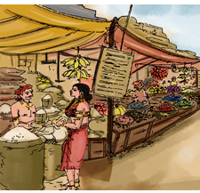
பெருந்தொகையை முதலீடு செய்து பொருள்களை அதிக அளவில் திரட்டி வைத்து விற்பனை செய்வது பெருவணிகம் ஆகும். பெருவணிகர்கள் பொருள்கள் உற்பத்தி செய்யப்படும் இடத்தில் இருந்து மொத்தமாகக் கொள்முதல் செய்வர். அவற்றைச் சிறுவணிகர்களுக்கு விற்பனை செய்வர். பெருவணிகர்களுக்கு நுகர்வோருடன் நேரடித் தொடர்பு இருப்பது அரிது.
ஒரு நாட்டில் உற்பத்தி செய்யப்படும் பொருள்களைப் பிற நாடுகளுக்கு அனுப்புவது ஏற்றுமதி எனப்படும். பிற நாடுகளில் இருந்து பொருள்களை வாங்குவது இறக்குமதி ஆகும். பழங்காலத்தில் தமிழ்நாட்டில் இருந்து தேக்கு, மயில்தோகை, அரிசி, சந்தனம், இஞ்சி, மிளகு போன்றவை பிற நாடுகளுக்கு ஏற்றுமதி செய்யப்பட்டன. சீனத்திலிருந்து கண்ணாடி, கற்பூரம், பட்டு போன்றவை இறக்குமதி செய்யப்பட்டன. அரேபியாவில் இருந்து குதிரைகள் வாங்கப்பட்டன.
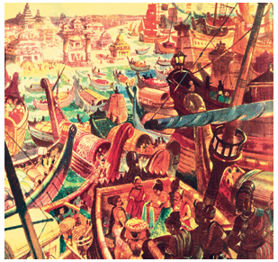
அக்கால வணிகர்கள் நேர்மையாகத் தொழில் செய்தனர் என்பதைத் தமிழ் இலக்கியங்கள் எடுத்துக்காட்டுகின்றன.
வாணிகம் செய்வார்க்கு வாணிகம் பேணிப்
பிறவும் தமபோல் செயின்
திருக்குறள், நூற்று இருபது
என்னும் திருக்குறள் வணிகரின் நேர்மையைப் பற்றிக் கூறுகிறது. வணிகர்கள் பொருளை வாங்கும்பொழுது உரிய அளவைவிட அதிகமாக வாங்க மாட்டார்கள். பிறருக்குள் கொடுக்கும் பொழுது அளவைக் குறைத்துக் கொடுக்கமாட்டார்கள். எனவே வணிகரை
நடுவு நின்ற நன்னெஞ்சினோர்
என்று பட்டினப்பாலை பாராட்டுகிறது.
கடைகளுக்குச் சென்று பொருள்களை வாங்க நேரம் இல்லாதவர்களுக்கு இணையவழி வணிகம் உதவுகிறது. இணையத்தளம் மூலம் பொருள்களை விற்பனை செய்யும் நிறுவனங்கள் பல உள்ளன. இவற்றின் இணையத்தளப் பக்கத்தில் நமக்குத் தேவையான பொருள்களைப் பற்றிய விவரங்கள் இருக்கும். பொருள்களின் தரம், விலை, சிறப்பு ஆகியவற்றைப் பிற நிறுவனப் பொருள்களோடு ஒப்பிட்டுப் பார்க்கலாம். நமக்குப் பிடித்த பொருள்களை நம் வீட்டிற்கே வரவழைக்கலாம். பொருளைப் பெற்றுக் கொண்ட பிறகு பணம் செலுத்தலாம். மின்னணுப் பரிமாற்றம் மூலமும் பணத்தைச் செலுத்தலாம்.
வணிகம் பண்டமாற்று முறையாகத் தொடங்கியது. பணத்தைப் பயன்படுத்தும் முறையாக வளர்ந்தது. இன்று மின்னணுப் பரிமாற்றம் செய்யும் அளவுக்கு உயர்ந்துள்ளது. வருங்காலத்தில் வணிகத்தில் இன்னும் பல புதுமைகள் வரக்கூடும்.
1, உங்கள் ஊரில் உற்பத்தியாகும் பொருள்களின் பெயர்களைப் பட்டியலிடுக
2, ஒவ்வொரு ஊரிலும் கிடைக்கும் சிறப்புப் பொருள்களின் பெயர்களை
அட்டவணைப்படுத்துக.
எடுத்துக்காட்டு, மதுரை, மல்லி
3, படித்து மகிழ்க.
கொள்வதும் மிகை கொளாது
கொடுப்பதும் குறைபடாது,
பட்டினப்பாலை
சமன்செய்து சீர்தூக்கும் கோல்போல் அமைந்தொருபால்
கோடாமை சான்றோர்க்கு அணி,
திருக்குறள்
1, வீட்டுப் பயன்பாட்டிற்காகப் பொருள் வாங்குபவர்
அ, நுகர்வோர்
ஆ, தொழிலாளி
இ, முதலீட்டாளர்
ஈ, நெசவாளி
2, வணிகம் கூட்டல் சாத்து என்பதனைச் சேர்த்தெழுதக் கிடைக்கும் சொல்
அ, வணிகசாத்து
ஆ, வணிகம்சாத்து
இ, வணிகச்சாத்து
ஈ, வணிகத்துசாத்து
3, பண்டம் கூட்டல் மாற்று என்பதனைச் சேர்த்தெழுதக் கிடைக்கும் சொல்
அ, பண்டமாற்று
ஆ, பண்டம்மாற்று
இ, பண்மாற்று
ஈ, பண்டுமாற்று
4, 'மின்னணு' என்னும் சொல்லைப் பிரித்து எழுதக் கிடைப்பது
அ, மின் கூட்டல் னணு
ஆ, மின்ன கூட்டல் அணு
இ, மின்னல் கூட்டல் அணு
ஈ, மின் கூட்டல் அணு
5, விரிவடைந்த என்னும் சொல்லைப் பிரித்து எழுதக் கிடைப்பது
அ, விரி கூட்டல் வடைந்த
ஆ, விரி கூட்டல் அடைந்த
இ, விரிவு கூட்டல் அடைந்த
ஈ, விரிவ் கூட்டல் அடைந்த
அ, வணிகம்
ஆ, ஏற்றுமதி
இ, சில்லறை
ஈ, கப்பல்
1, வணிகம் என்றால் என்ன
2, பண்டமாற்று முறைக்கு எடுத்துக்காட்டுத் தருக
3, சிறுவணிகப் பொருட்கள் யாவை
1, சிறுவணிகம், பெருவணிகம், வேறுபடுத்துக.
2, பழந்தமிழர் ஏற்றுமதி, இறக்குமதி செய்த பொருள்கள் எவை
வணிகப் பொருள்கள் தற்காலத்தில் எவ்வாறெல்லாம் மக்களை வந்தடைகின்றன
பாடுபட்டுத் தேடிய பணத்தைப் புதைத்து வைக்காதீர்" என்பது அவ்வையாரின் அறிவுரை, பணத்தைப் பயன்படுத்தாமல் வைத்திருப்பது மடமை ஆகும். பணத்தைக் கொண்டு ஏதேனும் ஒரு தொழில் செய்து வாழ்வில் முன்னேற வேண்டும். பிறருக்கு உதவியாக வாழ வேண்டும். அதுவே பணத்தின் பயன். இக்கருத்தை விளக்கும் கதை ஒன்றை அறிவோம்.
பூங்குளம் என்னும் ஊரில் அருளப்பர் என்னும் வணிகர் இருந்தார். ஒருமுறை அவர் வெளிநாட்டிற்குச் செல்ல வேண்டி இருந்தது. தமது பிள்ளைகள் வளவன், அமுதா, எழிலன் ஆகிய மூவரையும் அழைத்தார்.
பிள்ளைகளே! நான் வெளிநாட்டிற்குச் செல்ல இருக்கிறேன். நான் உங்கள் ஒவ்வொருவருக்கும் பணம் தருகிறேன். நான் கொடுத்த பணத்தைக் கவனமாகப் பாதுகாத்து எனக்குத் திருப்பித்தர வேண்டும்" எனக் கூறினார்.
ஒவ்வொருவருக்கும் ஐம்பதாயிரம் ரூபாய் பணம் கொடுத்தார். மூவரும் மகிழ்ச்சியுடன் பெற்றுக் கொண்டனர்.
அருளப்பர் அவர்களிடம் விடைபெற்றுச் சென்றார். அவர் சென்றதும் மூன்று பிள்ளைகளும் ஆலோசனை செய்தனர்.
"நமது திறமையை எடைபோடவே தந்தை நமக்குப் பணத்தைக் கொடுத்திருக்கிறார் என்றான் வளவன்.
"நானும் அப்படித்தான் நினைக்கிறேன்" என்றாள் அமுதா.
"நான் அப்படி நினைக்கவில்லை. பனத்தைப் பாதுகாக்கத் தெரிகிறதா என்று பார்க்கவே கொடுத்திருக்கிறார்' என்றான் எழிலன்.
வளவன் உழவுத்தொழிலில் ஆர்வம் உடையவன். தந்தை கொடுத்த பணத்தைக் கொண்டு நிலத்தைக் குத்தகைக்குப் பிடித்தான். அந்நிலத்தை உழுது பண்படுத்தினான். பண்படுத்திய நிலத்தில் காய்கறித் தோட்டத்தை அமைத்தான். வேலியிட்டான். நாள்தோறும் கவனமுடன் பாதுகாத்துப் பராமரித்து வந்தான்.
தோட்டம் முழுவதும் அவரை, பாகல், வெண்டை, கத்தரி முதலிய காய்கள் காய்த்துக் குலுங்கின. அவற்றை நகரத்திற்குக் கொண்டு சென்று விற்பனை செய்தான்.
அமுதாவிற்கு ஆடு. மாடுகள் வளர்ப்பதில் விருப்பம் அதிகம். தந்தை கொடுத்த பணத்தைக் கொண்டு நாட்டு மாடுகள் சிலவற்றை வாங்கினாள். அவற்றை அக்கறையோடு வளர்த்து வந்தாள். அவை தந்த பாலை வீடு வீடாகச் கொண்டு சென்று விற்றாள். மேலும் தயிர், வெண்ணெய், நெய் போன்றவற்றை மகளிர் சுய உதவிக்குழுக்கள் மூலம் விற்றுப் பொருள் ஈட்டினாள்.
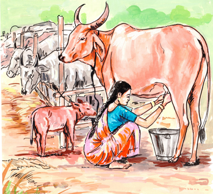
எழிலன் தந்தை கொடுத்த பணத்தைப் பத்திரமாக வைத்திருந்து மீண்டும் தந்தையிடம் ஒப்படைக்க வேண்டும் என முடிவு செய்தான். பணம் வீட்டில் இருந்தால் திருட்டுப் போய்விடும்: வட்டிக்கு முதலீடு செய்தால் வட்டிக்கு ஆசைப்பட்டான் எனத் தந்தை தாழ்வாக நினைத்துக் கொள்வாரே என எண்ணினான். அருகில் உள்ள வங்கிக்குச் சென்று பாதுகாப்புப் பெட்டக அறை ஒன்றை வாடகைக்கு எடுத்தான். அதில் பணத்தை வைத்துப் பூட்டி விட்டுத் திரும்பினான்.
அருளப்பர் தம் பயணத்தை முடித்துக்கொண்டு வீடு வந்து சேர்ந்தார். வளவனை அழைத்தார். "நான் கொடுத்த பணம் எங்கே?" என்று கேட்டார். வளவன் அப்பா, நீங்கள் எனக்குக் கொடுத்த பணத்தைக் கொண்டு வேளாண்மை செய்தேன். நல்ல வருவாய் கிடைத்தது. நீங்கள் கொடுத்த பணம் இப்போது இரண்டு மடங்காக உயர்ந்து உள்ளது. எனக் கூறித் தந்தையின் முன் பணத்தை வைத்தான்.
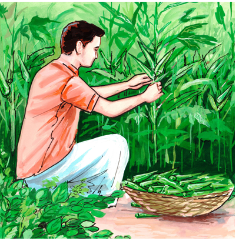
தந்தை மகிழ்ச்சி அடைந்தார். "நல்லது' உண்மையும் உழைப்பும் உன்னிடமும் உள்ளன. அந்தப் பணத்தை நீயே வைத்துக் கொள் வேளாண்மையைத் தொடர்ந்து செய்" என்றார்.
அடுத்து அமுதாவை அழைத்தார். அமுதா. "அப்பா நான் மாடுகளை வாங்கிப் பாள் கறந்து விற்றேன். நீங்கள் தந்த பணம் இரண்டு மடங்காக ஆகியிருக்கிறது. இதோ பெற்றுக் கொள்ளுங்கள்" என்று கூறிப் பணத்தைத் தந்தையிடம் கொடுத்தாள். "மிக்க மகிழ்ச்சி, இந்தப் பணத்தை எனது பரிசாக நீயே வைத்துக்கொள். பண்ணையை மேலும் விரிவாக்கி நடத்து, வாழ்த்துகள்" என்றார் தந்தை.
இறுதியாக எழிலனை அழைத்தார் தந்தை. அவன் வங்கியிலிருந்து தந்தை கொடுத்த தொகையை எடுத்து வந்தான் "அப்பா நீங்கள் கொடுத்த பணத்தை வங்கிப் பாதுகாப்புப் பெட்டகத்தில் பத்திரமாக வைத்திருந்தேன்" என்று கூறிக் கொடுத்தான்.
"பணம் என்பது வங்கிக் காப்பறையில் வைத்துப் பாதுகாக்க வேண்டிய பொருளன்று. அதைப் பயன்படுத்தித் தொழில் செய்து முன்னேறுவது இளமையும் ஆற்றலும் உடையோர் செயல், எழிலா நீ பணத்தையும் பயன்படுத்தவில்லை. காலத்தையும் வீணாக்கிவிட்டாய்" என்றார். எழிலன் தன் தவற்றை உணர்ந்தான்.
1, உழைப்பே மூலதனம் கதையை வகுப்பில் நாடகமாக நடித்துக் காட்டுக
2, நீங்கள் எழிலனாக இருந்திருந்தால் என்ன செய்து இருப்பீர்கள்? வகுப்பறையில் பேசுக.
3, கதையில் இடம் பெறும் கதாபாத்திரங்களில் உங்களைக் கவர்ந்தவர் யார்? ஏன்?
உழைப்பே மூலதனம் கதையைச் சுருக்கி எழுதுக.
சில எழுத்துக்களுக்கு இடையே ஒலிக்கும் முயற்சி பிறக்கும் இடம் ஆகியவற்றில் ஒற்றுமை உண்டு. இவ்வாறு ஒற்றுமை உள்ள எழுத்துகள் இன எழுத்துகள் எனப்படும். ஆறு வல்லின மெய் எழுத்துகளுக்கும் ஆறு மெல்லின எழுத்துகளும் இன எழுத்துகள் ஆகும். சொற்களில் மெல்லின மெய் எழுத்தை அடுத்துப் பெரும்பாலும் அதன் இனமாகிய வல்லின எழுத்து வரும்.

எடுத்துக்காட்டு, திங்கள், மஞ்சள் மண்டபம், சந்தனம், அம்பு, தென்றல்

இடையின எழுத்துகள் ஆறும் இய், இர், இல், இவ், இழ், இள் ஒரே இனமாகும்.
மெய்யெழுத்துகளைப் போலவே உயிர் எழுத்துகளிலும் இன எழுத்துகள் உண்டு. உயிர் எழுத்துகளில் குறிலுக்கு நெடிலும், நெடிலுக்குக் குறிலும் இன எழுத்துகள் ஆகும். குறில் எழுத்து இல்லாத ஐ என்னும் எழுத்துக்கு இ என்பது இன எழுத்தாகும். அவ் என்னும் எழுத்துக்கு உ என்பது இன எழுத்தாகும். சொல்லில் உயிர் எழுத்துகள் சேர்ந்து வருவது இல்லை. அளபெடையில் மட்டும் நெடிலைத் தொடர்ந்து அதன் இனமாகிய குறில் எழுத்து சேர்ந்து வரும்.
எடுத்துக்காட்டு, ஓஒதல், தூஉம், தழீஇ

தமிழ் எழுத்துகளில் ஆய்த எழுத்துக்கு மட்டுமே இன எழுத்து இல்லை.
பாடலில் இடம்பெற்றுள்ள இன எழுத்துச் சொற்களை எடுத்து எழுதுக.
தங்கப் பாப்பா வந்தாளே
சிங்கப் பொம்மை தந்தாளே
பஞ்சு போன்ற கையாலே,
பண்டம் கொண்டு வந்தாளே
பந்தல் முன்பு நின்றாளே,
கம்பம் சுற்றி வந்தாளே,
தென்றல் காற்றும் வந்ததே,
தெவிட்டா இன்பம் தந்ததே,
1, மெல்லினத்திற்கான இன எழுத்து இடம்பெறாத சொல்
அ, மஞ்சள்
ஆ, வந்தான்
இ, கண்ணில்
ஈ, தம்பி
2, தவறான சொல்
அ, கண்டான்
ஆ, வென்ரான்
இ, நண்டு
ஈ, வண்டு
தெண்றல்
கன்டம்
நன்ரி
மன்டபம்
இன எழுத்துகள் என்றால் என்ன?
'உழைப்பே உயர்வு' என்னும் பொருள் தரும் கதைகளைக் கேட்டு மகிழ்க.
அடைப்புகுறிக்குள் உள்ள சொற்களைச் சேர்த்துச் சொற்றொடரை நீட்டி எழுதுக.
அ, நான் பள்ளியில் படிக்கிறேன். அடைப்புகுறிக்குள் ஆறாம் வகுப்பு, அரசு என கொடுக்கப்பட்டுள்ளது,
அடைப்புகுறிக்குள் உள்ள சொற்களைச் சேர்த்துச் சொற்றொடரை நீட்டி எழுதுக.
ஆ, பொன்னன் முன்னேறினான். அடைப்புகுறிக்குள் வணிகம் செய்து, பொருளீட்டி, துணி எனக் கொடுக்கப்பட்டுள்ளது
அடைப்புகுறிக்குள் உள்ள சொற்களைச் சேர்த்துச் சொற்றொடரை நீட்டி எழுதுக.
அ, நீங்கள் வரும்போது எனக்குப் புத்தகம் வாங்கி வாருங்கள்.
அடைப்புக்குள் ஒரு என்ற சொல் உள்ளது
அடைப்புக்குள் உள்ள சொல்லைத் தக்க இடத்தில் சேர்த்து எழுதுக
ஆ, நாம் உரங்கள் தயாரித்து உழவர்களுக்கு வழங்க வேண்டும்.
அடைப்புக்குள் இயற்கை என்ற சொல் உள்ளது
அடைப்புக்குள் உள்ள சொல்லைத் தக்க இடத்தில் சேர்த்து எழுதுக
இ, நான் சொன்ன வேலையை அக்கறையுடன் செய்திருக்கிறார்கள். அடைப்புக்குள் மிகுந்த என்ற சொல் உள்ளது
அடைப்புக்குள் உள்ள சொல்லைத் தக்க இடத்தில் சேர்த்து எழுதுக
மல்லெடுத்து
கதிர்ச்சுடர்
நாட்டுப்புறப்பாடல்
பண்டமாற்று வணிகம்
மின்னணுப் பரிமாற்றம்
பட்டினப்பாலை
வேளாண்மை
ஒலிக்கும் முயற்சி
சுய உதவிக்குழு
தொலைவில் உள்ளவர்களிடம் தொடர்புகொள்ள உதவும் ஊடகங்களுள் ஒன்று கடிதம் ஆகும், கடிதம் இரண்டு வகைப்படும், அவை உறவுமுறைக் கடிதம், அலுவலகக் கடிதம் என்பவை ஆகும்.
தம் உறவினர்களுக்கும் நண்பர்களுக்கும் எழுதப்படும் கடிதம் உறவுமுறைக் கடிதம் ஆகும், இக்கடிதம் ஐந்து பகுதிகளைக் கொண்டது, அவை
1, இடமும் தேதியும்
2, விளி
3, உடல்பகுதி
4, கையொப்பம்
5, உறைமேல் முகவரி ஆகியவை ஆகும்.
இடமும் தேதியும், கடிதத்தின் வலது மேல்பகுதியில் இடம்பெறும்,
விளி, கடிதத்தின் இடப்பக்கம் இடம் பெறும். கடிதம் யாருக்கு எழுதப்படுகிறதோ அவரை நோக்கிக் கூறுவதாக அமையும்.
உடல் பகுதி, சொல்ல வேண்டிய செய்தி இங்கு இடம்பெறும்.
கையொப்பம், கடிதத்தின் வலப்புறத்தின் கீழ்ப்பகுதியில் இடம்பெறும்.
பெறுநர் முகவரி, கடித உறையின்மேல் இடம்பெற வேண்டிய பெறுநர் முகவரி கடிதத்தின் இறுதியில் எழுதப்படுவது மரபு.
உங்கள் ஊரில் நடைபெறும் மரபுச் சந்தையைக் காண வருமாறு தோழிக்குக் கடிதம் எழுதுக.
திருச்சி, அக்டோபர் இரண்டாம் தேதி இரண்டாயிரத்து இருபத்து ஐந்தாம் ஆண்டு
அன்புள்ள தோழி,
இங்கு நானும் என் பெற்றோரும் நலம், அதுபோல நீயும் உனது பெற்றோரும் நலமா, எங்கள் ஊரில் மரபுச் சந்தை ஒவ்வொரு மாதமும் நடைபெறுகிறது. அதில் நம் உழவர் பெருமக்கள் நம் மரபு சார்ந்த வேளாண் பொருள்களைக் காட்சிப்படுத்தவும் விற்பனை செய்யவும் ஏற்பாடு செய்திருப்பார்கள். இம்மாதம் நடைபெறும் மரபுச் சந்தைக்கு எனது உறவினர்களும் நமது தோழிகளும் வர உள்ளனர். நீயும் அந்த நிகழ்வைக் காண வர வேண்டும் என்று உன்னை அன்போடு அழைக்கிறேன். உனது வருகையை எதிர்பார்த்து ஆவலோடு காத்திருப்பேன்.
இப்படிக்கு,
உன் அன்புத்தோழி
கயல்விழி
உறைமேல் முகவரி
அ, முல்லை,
தந்தை பெயர் அன்பு,
எண் 5, மாணிக்கவாசகன் நகர்,
மதுரை,
அஞ்சல் குறியீட்டு எண், ஆறு இரண்டு ஐந்து பூஜ்யம் ஒன்று ஒன்பது
பேச்சுப் போட்டியில் வெற்றி பெற்றதற்குப் பரிசு அனுப்பிய மாமாவுக்கு நன்றி தெரிவித்துக் கடிதம் எழுதுக
நீலம், கோமேதகம், மாணிக்கம், வைரம், பவளம், வைடூரியம், முத்து, புட்பராகம், மரகதம்
அடைப்புக்குள் கப்பல், ஏற்றுமதி, இறக்குமதி, தராசு, நெல்மணி, குதிரை என்ற சொற்கள் கொடுக்கப்பட்டுள்ளது
1, தனி ஆளாய் இருந்தால் நடுநிலையாய் இருந்திடுவான், யாரும் வந்து அமர்ந்தால் ஏற்றம் இறக்கம் காட்டிடுவான். அவன் யார்
2, தண்ணீரில் கிடப்பான், தள்ளாடித் தள்ளாடி நடப்பான், காலில்லாத அவன் யார்
3, பேசமுடியாத ஓட்டப்பந்தய வீரனுக்கு வாய்க்கு மட்டும் பூட்டு, அவன் யார்
4, இயந்திரத்தால் செய்ய முடியாத மணி, ஊசி நூலில் கோக்க முடியாத மணி, பூமியில் விளையும் மணி, பூவுலகத்தார் விரும்பும் மணி. எந்த மணி
5, ஒருமதி வெளியே போகும், ஒருமதி உள்ளே வரும், இருமதியும் சேர்ந்துவிட்டால் பலநிதியும் சேர்ந்து வரும். அவை என்ன
எடுத்துக்காட்டு 1, உழவுத் தொழிலுடன் தொடர்புடைய ஐந்து சொற்கள் 1, ஏர், 2, கலப்பை, மேலும் மூன்று சொற்களை எழுதவும்
ஒன்று என்பதைக் குறிக்க ஓர், ஒரு ஆகிய இரண்டு சொற்கள் பயன்படுகின்றன. உயிரெழுத்தில் தொடங்கும் சொல்லுக்கு முன் ஓர் என்னும் சொல்லைப் பயன்படுத்த வேண்டும். உயிர்மெய்யெழுத்தில் தொடங்கும் சொல்லுக்கு முன் ஒரு என்னும் சொல்லைப் பயன்படுத்த வேண்டும்.
எடுத்துக்காட்டு ஓர் ஊர், ஓர் ஏரி.
ஒரு நகரம், ஒரு கடல்.
இவை போலவே, உயிரெழுத்தில் தொடங்கும் சொல்லுக்கு முன் அக்து என்னும் சொல்லைப் பயன்படுத்த வேண்டும். உயிர்மெய்யெழுத்தில் தொடங்கும் சொல்லுக்கு முன் அது என்னும் சொல்லைப் பயன்படுத்த வேண்டும்.
எடுத்துக்காட்டு அக்து இங்கே உள்ளது.
அது நன்றாக உள்ளது.
1, ஒரு அழகிய சிற்றூரில் ஓர் குளம் இருந்தது.
2, ஒரு இரவும் ஓர் பகலும் சேர்ந்தது ஒருநாள்.
3, அது இல்லாத இடத்தில் எதுவும் நடக்காது.
4, அக்து நகரத்திற்குச் செல்லும் சாலை.
5, அது ஒரு இனிய பாடல்.
தொடர்புடைய சொற்களைக் கொண்டு நிரப்புக

இடமிருந்து வலம்
1, நானிலம் படைத்தவன் பாடலை எழுதியவர், மு வில் தொடங்கும் ஆறு எழுத்து சொல் கொண்டு நிரப்புக
6, அரேபியாவில் இருந்து இறக்குமதி செய்யப்பட்டது, கு வில் தொடங்கும் மூன்று எழுத்து சொல் கொண்டு நிரப்புக
மேலிருந்து கீழ்
1, காடும் காடு சார்ந்த இடம், மூன்று எழுத்து சொல் கொண்டு நிரப்புக
3, பொருள்களைப் பிறநாடுகளுக்கு அனுப்புவது, ஏ வில் தொடங்கும் ஐந்து எழுத்து சொல் கொண்டு நிரப்புக
வலமிருந்து இடம்
4, ஒரு பொருளைக் கொடுத்து வேறு பொருளைப் பெறும் முறை, ப வில் தொடங்கும் ஆறு எழுத்து சொல் கொண்டு நிரப்புக
5, 'ஆழி' என்பதன் பொருள், க வில் தொடங்கும் மூன்று எழுத்து சொல் கொண்டு நிரப்புக
கீழிலிருந்து மேல்
2, கிராமங்களில் செயல்படுவது மகளிர் டேஸ் உதவிக்குழுக்கள் ஆகும், சு வில் தொடங்கும் இரண்டு எழுத்து சொல் கொண்டு நிரப்புக
5, 'கலம் என்பதன் பொருள், க வில் தொடங்கும் நான்கு எழுத்து சொல் கொண்டு நிரப்புக
1, இந்தியக் குடிமகனாக எனது கடமையை நிறைவேற்றுவேன்.
2, நெகிழிப் பயன்பாட்டை இயன்றவரை தவிர்ப்பேன்.
3, கடைக்குச் செல்லும்போது துணிப்பைகளை எடுத்துச் செல்வேன்.
பண்டம், கமாடிட்டி
கடற்பயணம், வயேஜி
பயணப்படகுகள், பெர்ரீஸ்
தொழில் முனைவோர், எண்டர்புருனர்
பாரம்பரியம், எரிடேஜி
கலப்படம், அடல்ட்ரேசன்
நுகர்வோர், கன்சுமர்
வணிகர், மெர்ச்சண்ட்
1, அன்பிற்கும் உண்டோ அடைக்கும்தாழ் ஆர்வலர்
புன்கண்நீர் பூசல் தரும்.
எளிய உரை, அன்புக்கும் அடைப்பு உண்டோ அன்புடையவர் கண்ணீரே உள்ளத்தைக் காட்டிவிடும்.
2, அன்பிலார் எல்லாம் தமக்குரியர் அன்புடையார்
என்பும் உரியர் பிறர்க்கு.
எளிய உரை, அன்பிலார் எல்லாம் தமக்கே கொள்வர், அன்பினர் உடம்பையும் பிறர்க்கு வழங்குவர்.
3, அன்போடு இயைந்த வழக்கென்ப ஆருயிர்க்கு
என்போடு இயைந்த தொடர்பு.
எளிய உரை, உயிர் உடம்பினைப் பெற்ற தொடர்பு இருவர் அன்புத்தொடர்பால் வந்தது என்பர்.
4, அன்புஈனும் ஆர்வம் உடைமை அதுஈனும்
நண்புஎன்னும் நாடாச் சிறப்பு.
எளிய உரை, அன்பு பழகும் விருப்பத்தைத் தரும், அவ்விருப்பம் புதிய நட்புச் சிறப்பைத் தரும்.
5, அன்புற்று அமர்ந்த வழக்கென்ப வையகத்து
இன்புற்றார் எய்தும் சிறப்பு.
எளிய உரை, உலகத்தில் காதலர்கள் அடையும் சிறப்பு அன்போடு வாழ்ந்ததால் வந்தது என்பர்.
6, அறத்திற்கே அன்புசார்பு என்ப அறியார்
மறத்திற்கும் அக்தே துணை.
எளிய உரை, அறத்திற்கு மட்டும் அன்பு துணையில்லை, வீரத்திற்கும் அதுவே துணை.
7, என்பு லதனை வெயில்போலக் காயுமே
அன்பி லதனை அறம்.
எளிய உரை, எலும்பில்லாப் புழுவை வெயில் வருத்தும், அன்பில்லா உயிரை அறம் வருத்தும்.
8, அன்பகத்து இல்லா உயிர்வாழ்க்கை வன்பாற்கண்
வற்றல் மரம்தளிர்த் தற்று.
எளிய உரை, நெஞ்சத்தில் அன்பின்றி வாழ முடியுமா, பாலை நிலத்தில் பட்டமரம் தளிர்க்குமா
9, புறத்துறுப்பு எல்லாம் எவன்செய்யும் யாக்கை
அகத்துறுப்பு அன்பி லவர்க்கு.
எளிய உரை, அன்பாம் உறுப்பு அகத்தில் இல்லையெனின் புறத்து உறுப்பெல்லாம் இருந்தும் என்ன
10, அன்பின் வழியது உயிர்நிலை அக்துஇலார்க்கு
என்புதோல் போர்த்த உடம்பு.
எளிய உரை, உயிருடைய உடம்பாவது அன்புடைய வாழ்வு, அன்பிலார் உடம்புகள் எலும்புத் தோல்கள்
1, இருந்து ஓம்பி இல்வாழ்வது எல்லாம் விருந்து ஓம்பி
வேளாண்மை செய்தல் பொருட்டு.
எளிய உரை, குடும்பமாக இருந்து சிறந்து வாழ்வதெல்லாம் விருந்துபேணி உதவி செய்தற்கே.
2, விருந்து புறத்ததாத் தானுண்டல் சாவா
மருந்துஎனினும் வேண்டற்பாற்று அன்று.
எளிய உரை, வந்தவிருந்து வெளிப்புறம் இருக்க, தனக்குச் சாவாமருந்து கிடைப்பினும் உண்ணல் ஆகாது
3, வருவிருந்து வைகலும் ஓம்புவான் வாழ்க்கை
பருவந்து பாழ்படுதல் இன்று.
எளிய உரை, நாளும் வருகின்ற விருந்தைப் போற்றுக வாழ்வு துன்பப்பட்டு அழியாது.
4, அகன்அமர்ந்து செய்யாள் உறையும் முகன்அமர்ந்து
நல்விருந்து ஒம்புவான் இல்.
எளிய உரை, முகம் மலர்ந்து விருந்து செய்பவன் வீட்டில் அகம் மலர்ந்து திருமகள் தங்கிவிடுவாள்.
5, வித்தும் இடல்வேண்டும் கொல்லோ விருந்தோம்பி
மிச்சில் மிசைவான் புலம்.
எளிய உரை, விருந்து செய்தபின் மிச்சத்தை உண்பவனது நிலத்துக்கு விதைகூட இடவேண்டுமா
6, செல்விருந்து ஓம்பி வருவிருந்து பார்த்துஇருப்பான்
நல்விருந்து வானத் தவர்க்கு.
எளிய உரை, வந்தாரைப் போற்றி வருவாரை ஏற்பவன் தேவர்க்கு நல்விருந்து ஆவான்.
7, இணைத்துணைத்து என்பதொன்று இல்லை விருந்தின்
துணைத்துணை வேள்விப் பயன்.
எளிய உரை, விருந்தின்பயன் இதுவென்று அளக்க முடியாது, விருந்தினர் பெருமையே விருந்தின் பெருமை.
8, பரிந்து ஓம்பிப் பற்றற்றேம் என்பர் விருந்தோம்பி
வேள்வி தலைப்படா தார்.
எளிய உரை, விருந்து என்னும் வேள்வியில் ஈடுபடாதவர் காத்த பொருளையும் இழந்து பின் வருந்துவர்.
9. உடைமையுள் இன்மை விருந்தோம்பல் ஓம்பா
மடமை மடவார்கண் உண்டு.
எளிய உரை, செல்வத்தில் வறுமை விருந்திடா மடமையாம், இக்குணம் முழுதும் அறிவிலியிடமே இருக்கும்.
10. மோப்பக் குழையும் அனிச்சம் முகந்திரிந்து
நோக்கக் குழையும் விருந்தும்புத் தோல்கள்,
எளிய உரை, அனிச்சப்பூ மோந்தால் வாடும், விருந்தோ முகமாறிப் பார்த்தாலே வாடிப் போம்.
1, இன்சொலால் ஈரம் அளைஇப் படிறுஇலவாம்
செம்பொருள் கண்டார்வாய்ச்சொல்
எளிய உரை, அன்பும் தூய்மையும் அறமும் உடைய உண்மையாளர் சொல்லே இன்சொல்லாம்
2, அகன்அமர்ந்து ஈதலின் நன்றே முகன்அமர்ந்து
இன்சொலன் ஆகப் பெறின்
எளிய உரை, முகமலர்ந்து என்றும் இன்சொற் கூறின் அகமலர்ந்து கொடுப்பதினும் சிறந்தது
3, முகத்தான் அமர்ந்துஇனிது நோக்கி அகத்தான்ஆம்
இன்சொ லினதே அறம்
எளிய உரை, முகம் மலர்ந்து இனிமையாகப் பார்த்து உள்ளத்தோடு சொல்லுக, அதுவே அறம்
4, துன்புறூஉம் துவ்வாமை இல்லாகும் யார்மாட்டும்
இன்புறூஉம் இன்சொ லவர்க்கு
எளிய உரை, யார்க்கும் இன்பச் சொல்லைச் சொல்லுக, துன்பந்தரும் வறுமை வாராது.
5, பணிவுடையன் இன்சொலன் ஆதல் ஒருவற்கு
அணிஅல்ல மற்றுப் பிற
எளிய உரை, பணிவும் இன்சொல்லுமே உயிரணிகள், பிறவெல்லாம் உடலணிகள்.
6, அல்லவை தேய அறம்பெருகும் நல்லவை
நாடி இனிய சொலின்,
எளிய உரை, நல்லவற்றைக் கண்டு இனிமையாகக் கூறின் தீமை தேயும், அறம் வளரும்
7, நயன்ஈன்று நன்றி பயக்கும் பயன்ஈன்று
பண்பின் தலைப்பிரியாச் சொல்
எளிய உரை, பிறர்க்கு நற்பயன் தரும் உயர் பண்புச்சொல் தனக்கும் நயமும் நலமும் தரும்
8, சிறுமையுள் நீங்கிய இன்சொல் மறுமையும்
இம்மையும் இன்பம் தரும்.
எளிய உரை, சிறுதன்மை இல்லாத இன்சொல் எப்பிறப்பிலும் இன்பம் தரும்
9, இன்சொல் இனிதுஈன்றல் காண்பான் எவன்கொலோ
வன்சொல் வழங்கு வது
எளிய உரை, இன்சொல் தனக்கு நலந்தருவதைக் கண்டவன் ஏன் பிறரிடம் கடுஞ்சொற் கூறுகிறான்
10, இனிய உளவாக இன்னாத கூறல்
கனிஇருப்பக் காய்கவர்ந் தற்று.
எளிய உரை, இன்சொல் இருக்கவும் கடுஞ்சொல் கூறாதே, கனியை விடுத்துக் காயைக் கவரலாமா
1, பல்லார் முனியப் பயன்இல சொல்லுவான்
எல்லாரும் எள்ளப் படும்.
எளிய உரை, கேட்டார் வெறுக்க வீணாகப் பேசுபவனை எல்லாரும் இகழ்வர்.
2, பயன் இல பல்லார்முன் சொல்லல் நயன்இல
நட்டார்கண் செய்தலின் தீது.
எளிய உரை, பலர்முன் வீண்பேச்சுப் பேசுவது நண்பர்க்கு வேண்டாதன செய்தலினும் தீது
3, நயனிலன் என்பது சொல்லும் பயன்இல
பாரித்து உரைக்கும் உரை
எளிய உரை, பயனில்லாதவற்றை விரித்து உரைத்தால் விளங்காதவன் என்று பேராகும்.
4, நயன்சாரா நன்மையின் நீக்கும் பயன்சாராப்
பண்புஇல்சொல் பல்லார் அகத்து
எளிய உரை, பயனில்லாத சிறுசொல்லைப் பலர்முன் கூறுவது அறிவும் இல்லை, நன்மையும் இல்லை
5, சீர்மை சிறப்பொடு நீங்கும் பயன்இல
நீர்மை உடையார் சொலின்.
எளிய உரை, பண்புடையவர்கள் பயனில சொன்னால் தரமும் சிறப்பும் போய் விடும்.
எளிய உரை, பயனில்லாத சிறுசொல்லைப் பலர்முன் கூறுவது அறிவும் இல்லை, நன்மையும் இல்லை.
6, பயனில்சொல் பாராட்டு வானை மகன்எனல்
மக்கட் பதடி எனல்.
எளிய உரை, பயனில சொல்வானைப் புகழ்கின்றவனை மனிதன் என்னாதே, மனிதப்பதர் என்று சொல்.
7, நயன்இல சொல்லினும் சொல்லுக சான்றோர்
பயன்இல சொல்லாமை நன்று
எளிய உரை, சான்றோர் முறையல சொல்லினும் சொல்லலாம், பயனற்றவை சொல்லல் ஆகாது.
8, அரும்பயன் ஆயும் அறிவினார் சொல்லார்
பெரும்பயன் இல்லாத சொல்,
எளிய உரை, அரிய பயனை அடைய முயலும் அறிஞர் பெரியபயன் இல்லாதவற்றைச் சொல்லார்
9, பொருள்தீர்ந்த பொச்சாந்தும் சொல்லார் மருள்தீர்ந்த
மாசறு காட்சி யவர்.
எளிய உரை, மயக்கம் இல்லாத நல்லறிஞர் மறந்தும் பொருளற்ற சொற்களைச் சொல்லார்.
10, சொல்லுக சொல்லில் பயனுடைய சொல்லற்க
சொல்லிற் பயனிலாச் சொல்
எளிய உரை, பயனுள்ள நல்ல சொற்களையே சொல்லுக, பயனில்லா வீண் சொற்களைச் சொல்லாதே.
1, வறியார்க்குஒன்று ஈவதே ஈகைமற்று எல்லாம்
குறியெதிர்ப்பை நீரது உடைத்து
எளிய உரை
ஈகை என்பது ஏழைகளுக்குக் கொடுப்பதே, பிறர்க்குச் செய்வது எதிர்பார்த்துக் கொடுப்பது
2, நல்ஆறு எனினும் கொளல்தீது மேலுலகம்
இல்எனினும் ஈதலே நன்று.
எளிய உரை
வீட்டுநெறி என்றாலும் வாங்குவது தீது, வீடில்லை என்றாலும் கொடுப்பது நல்லது.
3, இலன்என்னும் எவ்வம் உரையாமை ஈதன்
குலன்உடையான் கண்ணே உள
எளிய உரை
இல்லை என்ற துயரை எடுத்துரைக்கும் முன்பே கொடுக்குங்குணம் குடிப்பிறந்தவனிடம் உண்டு.
4, இன்னாது இரக்கப் படுதல் இரந்தவர்
இன்முகம் காணும் அளவு
எளிய உரை
கேட்பவரின் முகமலர்ச்சியைக் காணும் வரை கேட்கவிடுதல் இனியது ஆகாது.
5, ஆற்றுவார் ஆற்றல் பசிஆற்றல் அப்பசியை
மாற்றுவார் ஆற்றலின் பின்
எளிய உரை
பசி பொறுப்பது பேராற்றல், அதனினும் பேராற்றல் பிறர் பசியை ஆற்றுவது.
6, அற்றார் அழிபசி தீர்த்தல் அக்துஒருவன்
பெற்றான் பொருள்வைப் புழி
எளிய உரை
ஏழைகளின் பெரும் பசியைத் தீர்ப்பாயாக, அதுதான் செல்வனுக்குச் சேமிப்பிடம்.
7, பாத்துஊண் மரீஇ யவனைப் பசிஎன்னும்
தீப்பிணி தீண்டல் அரிது
எளிய உரை
பகுத்துக் கொடுத்து உணவருந்தியவனைத் தீய பசிநோய் என்றும் தீண்டாது.
8, ஈத்துஉவக்கும் இன்பம் அறியார்கொல் தாம்உடைமை
வைத்துஇழக்கும் வன்க ணவர்.
எளிய உரை
பொருளைத்தேடி இழக்கும் கொடியவர்கள் கொடுத்து மகிழும் இன்பத்தை அறியாரோ
9, இரத்தலின் இன்னாது மன்ற நிரப்பிய
தாமே தமியர் உணல்.
எளிய உரை
நிறைந்த உணவைத் தனித்து உண்பது இரப்பதினும் பார்வைக்கு அருவருப்பானது.
10, சாதலின் இன்னாதது இல்லை இனிதுஅதூஉம்
ஈதல் இயையாக் கடை
எளிய உரை
ஓர் ஏழைக்கு உதவ முடியாத போது விரும்பாச் சாவும் விரும்பத் தகும்.
வான்புகழ் வள்ளுவரின் அறக்கருத்துகள் மாணவரிடம் சென்று சேர வேண்டும், அதன்வழி நன்னெறிப் பண்புகள் மாணவரிடையே வளர வேண்டும் என்ற நோக்கில் புதிய பாடத்திட்டத்தில் திருக்குறளின் 150 பாக்கள் சேர்க்கப்பட்டுள்ளன.
திருக்குறளை நாள்தோறும் வழிபாட்டுக் கூட்டத்தில் பொருளுடன் கூறலாம்.
நாள்தோறும் ஒருதிருக்குறளைப் பொருளுடன் பள்ளியின் தகவல்பலகையில் காட்சிப்படுத்தலாம்.
திருக்குறள் ஒப்பித்தல் போட்டியை வகுப்புவாரியாக நடத்தலாம்.
திருக்குறள் கலைவிழாக்கள், ஓவியக் கண்காட்சிகள், நாடக விழாக்கள், குறளின் பொருளை வாழ்வியல் அனுபவங்களோடு பொருத்துதல், குறளை இசையமைத்துப் பாடுதல் போன்ற நிகழ்வுகளைப் பள்ளிகளில் ஒருங்கிணைக்கலாம்.
இலக்கியமன்றக் கூட்டங்களில் குறட்பாக்கள் தொடர்பான கதைகள் சொல்லலாம், நாடகங்களை நடத்தலாம்.
குறட்பாக்கள் தொடர்பான வினாக்களைத் தொகுத்து வினாடி வினா நடத்தலாம்.
சான்றோர் வாழ்வில் நிகழ்ந்த சுவையான நிகழ்ச்சிகள் மூலம் திருக்குறள் கருத்துகளை விளக்கலாம்.
பள்ளி சார்ந்த அழைப்பிதழ்கள், பரிசுச் சான்றிதழ்களில் திருக்குறளை அச்சிட்டு வழங்கலாம்.
உலகப் பொதுமறையாம் திருக்குறளில் இடம்பெற்றிருக்கும் நன்னெறிக் கருத்துகளின் அடிப்படையில் நீதிக்கதைகள், இசைப்பாடல்கள், சித்திரக் கதைகள், அசைவூட்டப் படங்கள் வாயிலாகத் திருக்குறள் வளங்களை மாணவர்களிடம் கொண்டு சேர்க்கலாம்.
குறிப்பு, மாணவர்கள் எளிதில் படித்துப் புரிந்துகொள்வதற்கு ஏற்றவகையில் குறட்பாக்களின் சொற்கள் பிரித்துத் தரப்பட்டுள்ளன, அலகிடுவதற்கு அன்று.
முனைவர் பா, வீரப்பன் பேராசிரியர், தேசியக் கல்வியியல் ஆராய்ச்சி மற்றும் பயிற்சி றுவனம், புதுடில்லி
முனைவர் டி சகாய தாஸ்
பேராசிரியர் மற்றும் துறைத்தலைவர், மாநிலக் கல்வியியல் ஆராய்ச்சி மற்றும் பயிற்சி நிறுவனம், கேரளா
முனைவர் நா, அருள்முருகள்
இணை இயக்குநர், ஒருங்கிணைந்த பள்ளிக் கல்வி, சென்னை, 6
முனைவர் ராம பாண்டுரங்கள்
இணை இயக்குநர் ஓய்வு, மாநிலக் கல்வியியல் ஆராய்ச்சி மற்றும் பயிற்சி நிறுவனம், சென்னை.
முனைவர் ச, மாடசாமி, பேராசிரியர் ஓய்வு, சென்னை
திரு, ச, தமிழ்ச்செல்வன், எழுத்தாளர்
திருமதி ஏ, எஸ், பத்மாவதி எழுத்தாளர், சென்னை
திரு, ம, ராமகிருட்டிணன், முதன்மைக்கல்வி அலுவலர், திருச்சி
முனைவர் வி, கிருஷ்ணன்
தமிழ்த் துறைதலைவர், அரசு கலைக்கல்லூரி, உடுமலைப்பேட்டை
முனைவர் காசி, மாரியப்பன்
இணைப் பேராசிரியர், பெரியார் ஈ, வெ, ரா, கல்லூரி, திருச்சி
முனைவர் பா, முத்துசாமி
உதவிப் பேராசிரியர், பச்சையப்பன் கல்லூரி, சென்னை
முனைவர் மா, வெங்கடேசன்
இணைப் பேராசிரியர், அரசு கலைக் கல்லூரி ஆடவர், கிருஷ்ணகிரி
முனைவர் கவிதா ராணி
இணைப்பேராசிரியர், லேடி டோக் கல்லூரி, மதுரை
முனைவர் அ, மணமலர்ச்செல்வி
முதுநிலை விரிவுரையாளர், மாவட்ட ஆசிரியர் கல்வி மற்றும் பயிற்சி நிறுவனம், அரியலூர் மாவட்டம்.
திரு, இளையராஜா
திரு, இளையபாரதி
திரு, கோபு சுப்பையன்
திரு, பி, தனபால்
ஓவிய ஆசிரியர், எம், சி, டி, ஆர், எம், ராமநாதன் செட்டியார் மேல்நிலைப் பள்ளி, குழிபிறை, புதுக்கோட்டை மாவட்டம்.
திரு, சோ, வேல்முருகன்
ஓவிய ஆசிரியர், அரசு மகளிர் மேல்நிலைப் பள்ளி, கோவில்பட்டி, தூத்துக்குடி மாவட்டம்.
திரு, ஏ, முத்துக்குமரன்
ஓவிய ஆசிரியர், அரசு மேல்நிலைப் பள்ளி, பண்ருட்டி, கடலூர் மாவட்டம்.
திரு, என், கோபாலகிருஷ்ணன், ஓவிய ஆசிரியர், குமார ராஜா முத்தையா மேல்நிலைப் பள்ளி, காந்தி நகர், அடையார், சென்னை,
திரு, கா, தனஸ் தீபக் ராஜன்
திரு, கா, நலன் நான்சி ராஜன்
திரு, ம, சார்லஸ்
மாணவர்கள், அரசு கவின் கலை கல்லூரி, சென்னை மற்றும் கும்பகோணம்
பழையவலம் பா, ராமநாதன், வி ட்டு இனோவேஷன்ஸ், சென்னை
திரு, கோபு சுப்பையன்
திரு. எம், கரண்
கி, ஜெரால்டு வில்சன்
கோபுலு, மருது, லதா
தட்டச்சர்
திருமதி ரா, வித்யா
மாநிலக் கல்வியியல் ஆராய்ச்சி மற்றும் பயிற்சி நிறுவனம், சென்னை
ஒருங்கிணைப்பு ம, அமல்ராஜ்
திரு, ம, பாலசுப்பிரமணியம்
விரிவுரையாளர், மாவட்ட ஆசிரியர் கல்வி மற்றும் பயிற்சி நிறுவனம், கரூர்.
திருமதி சொ, ராஜலக்ஷ்மி
பட்டதாரி ஆசிரியர், நகராட்சி மேல்நிலைப் பள்ளி, சேலையூர், தாம்பரம்,
காஞ்சிபுரம் மாவட்டம்.
திரு, த ஜீவானந்தம்
பட்டதாரி ஆசிரியர் ஊராட்சி ஒன்றிய நடுநிலைப் பள்ளி,
சிட்டம்பட்டி, மதுரை கிழக்கு ஒன்றியம், மதுரை மாவட்டம்
திரு, சிவ, முரளி
பட்டதாரி ஆசிரியர், ஜே, எப், மேல்நிலைப் பள்ளி, புலிவலம்,
திருச்சி மாவட்டம்.
புலவர் கு, சம்பந்தம்
முதுகலை ஆசிரியர் ஓய்வு, டி, ஆர், பி, சி, சி, சி, இந்து மேல்நிலைப் பள்ளி, திருவள்ளூர்
திருமதி, சிவ, அன்புச்செல்வி
முதுகலை ஆசிரியர், பெ, கா, அரசு மகளிர் மேல்நிலைப் பள்ளி, அம்பத்தூர், திருவள்ளூர் மாவட்டம்
புலவர் தமிழ், திருமால்
முதுகலை ஆசிரியர், திருவள்ளுவர் மேல்நிலைப் பள்ளி, குடியாத்தம்.
வேலூர் மாவட்டம்.
முனைவர் செ, தாரகேஸ்வரி
முதுகலை ஆசிரியர், அரசு ஆண்கள் மேல்நிலைப் பள்ளி, கே, வி, குப்பம், வேலூர் மாவட்டம்.
திரு, மொ, மருதமுத்து
பட்டதாரி ஆசிரியர், அரசு மேல்நிலைப் பள்ளி, இ, கீரனூர், கடலூர் மாவட்டம்.
திருமதி ஆர், சந்திரா
பட்டதாரி ஆசிரியர், அரசு மேல்நிலைப் பள்ளி, மேடவாக்கம், சென்னை
திருமதி ஐ, சா, மேபல் ஜெசி சந்திரா
பட்டதாரி ஆசிரியர், சி, சி, எம், ஏ, அரசு பெண்கள் மேல்நிலைப் பள்ளி, ராஜாதெரு, கோவை.
திரு, ந, தமிழ்க் காவலன்
பட்டதாரி ஆசிரியர், அரசு மேல்நிலைப் பள்ளி, அடியக்கமங்கலம், திருவாரூர் மாவட்டம்.
திருமதி மு, கீதா இடைநிலை ஆசிரியர், அரசு மகளிர் மேல்நிலைப் பள்ளி, சந்தைபேட்டை, புதுகோட்டை மாவட்டம்.
திருமதி ச, சாந்த சுந்தரி, பட்டதாரி ஆசிரியர், ஆர், கே, சிரி, ரங்கம்மாள் கல்வி நிலையம், கோவை.
திருமதி ரெ, விமலா தேவி, பட்டதாரி ஆசிரியர், அரசு மேல்நிலைப் பள்ளி, சிறுமலை ராயபுரம், திண்டுக்கல் மாவட்டம்
திருமதி ஆ, கலைவாணி, பட்டதாரி ஆசிரியர், ஊராட்சி ஒன்றிய நடுநிலைப் பள்ளி, காளம்பாளையம், கோவை மாவட்டம்.
திருமதி நா, ஜானகி, பட்டதாரி ஆசிரியர், அரசு பெண்கள் மேல்நிலைப் பள்ளி, சின்னத்தடாகம், கோவை மாவட்டம்.
முனைவர் ஆ, சக்தி வடிவு முதுகலை ஆசிரியர், அறிஞர் அண்ணா அரசு மேல்நிலைப் பள்ளி, குன்னூர், நீலகிரி மாவட்டம்.
திருமதி வசந்தா, பட்டதாரி ஆசிரியர், பவன்ஸ் ராஜாஜி வித்யாஷ்ரம் சி, பி, எஸ், சி, கீழ்பாக்கம், சென்னை,
திருமதி ஜே, பி, ஆர், லீனா ஜீடியா
பட்டதாரி ஆசிரியர், டி, ஏ, வி, ஆண்கள் மேல்நிலைப் பள்ளி, கோபாலபுரம். சென்னை,
திரு, மா, பழனி, தலைமை ஆசிரியர், ஊராட்சி ஒன்றிய நடுநிலைப் பள்ளி, சின்னப்பள்ளத்தூர், பென்னகரம், தருமபுரி மாவட்டம்.
திருமதி ப, சித்ரகலா, பட்டதாரி ஆசிரியர், சின்மயா வித்யாலயா, சி, பி, எஸ், சி, சின்மயா நகர், விருகம்பாக்கம், சென்னை,
முனைவர் ந, சுரேஷ்ராஜன், பட்டதாரி ஆசிரியர், புனித வளனார் அரசு மேல்நிலைப் பள்ளி, மஞ்சக்குப்பம், கடலூர் மாவட்டம்.
திரு, பிரகாஷ் ஆசிரியப் பயிற்றுநர், அனைவருக்கும் கல்வி இயக்கம், நாமக்கல்,
திரு, இ, அப்துல்கபூர் பட்டதாரி ஆசிரியர், அரசு மேல்நிலைப் பள்ளி, தேவர் சோலை, நீலகிரி மாவட்டம்.
திருமதி மு, செல்வி, பட்டதாரி ஆசிரியர், அரசு மேல்நிலைப் பள்ளி, காட்டூர், மீஞ்சூர் ஒன்றியம், திருவள்ளூர் மாவட்டம்